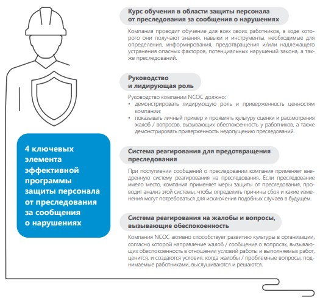

Этот отчет стал шестым по счету добровольным отчетом об устойчивом развитии компании North Caspian Operating Company (NCOC)1. Он подготовлен в соответствии с «Руководством по добровольной отчетности в области устойчивого развития в нефтегазовой промышленности», разработанным совместно со Всемирной ассоциацией нефтегазовой промышленности по социальным и экологическим вопросам (IPIECA), Международной ассоциацией производителей нефти и газа (IOGP) и Американским институтом нефти (API).
В отчете отражены обязательства NCOC по стабильной и ответственной разработке месторождения Кашаган, направленные на получение долгосрочных преимуществ для Республики Казахстан и акционеров компании. В нем освещаются основные показатели деятельности NCOC в области производственных операций, социальноэкономического развития и охраны окружающей среды.
В этом отчете продемонстрирован вклад компании в достижение целей в области устойчивого развития, направленных на решение экономических, социальных и экологических задач в Казахстане.
В 2020 году мы продолжили работу над отчетом об устойчивом развитии в тесном сотрудничестве с внешним консультативным советом (см. раздел 11.7. Внешний консультативный совет).
Предоставленная информация полностью соответствует данным, приведенным в отчетах о работе в рамках Северо-Каспийского проекта по охране окружающей среды и социально-экономической деятельности, которые предоставлялись акционерам NCOC и Республике Казахстан, выполняющей надзорные и контролирующие функции.
Процесс отчетности
на сайте www.ncoc.kzосновные
достижения
в 2020 году

показатели
деятельности
NCOC
- 2017
- 2018
- 2019
- 2020
Производство
Объем добычи нефти (на устье скважин, млн тонн)
- 8.29
- 13.22
- 14.13
- 15.14
Объем добычи газа (на устье скважин, млрд стандартных кубических метров)
- 4.80
- 7.70
- 8.45
- 9.15
В том числе объем обратной закачки (млрд стандартных кубических метров)
- 0.32
- 2.24
- 3.15
- 3.81
Объем экспорта произведенной серы (тыс. тонн)
- 109
- 1,056
- 1,207
- 1,228
Объем серы в блоках на хранении на конец года (тыс. тонн)
- 1,121
- 1,409
- 1,527
- 1,594
Охрана здоровья и труда
Производственные травмы и заболевания
Общий уровень регистрируемых травм (ОУРТ) на млн человеко-часов
- 0.60
- 0.44
- 0.88
- 0.23
Работники NCOC
- 0.76
- 0.66
- 0.47
- 0.15
Подрядчики
- 0.55
- 0.36
- 1.01
- 0.27
Случаи временной нетрудоспособности (СВН) на млн человеко-часов
- 0.32
- 0.09
- 0.11
- 0.06
Работники NCOC
- 0.30
- 0.17
- 0
- 0
Подрядчики
- 0.33
- 0.06
- 0.14
- 0.09
Случаи со смертельным исходом
- 0
- 0
- 0
- 0
Несчастные случаи со смертельным исходом на млн человеко-часов
- 0
- 0
- 0
- 0
Уровень происшествий со смертельным исходом на млн человеко-часов
- 0
- 0
- 0
- 0
Количество происшествий уровня 1, связанных с технологической безопасностью (согласно API RP 75422)
- 3
- 0
- 0
- 0
Количество происшествий уровня 2, связанных с технологической безопасностью (согласно API RP 75422)
- 11
- 2
- 0
- 0
API RP 754 – практические рекомендации Американского института нефти, которые подразделяют показатели технологической безопасности нефтехимической и нефтеперерабатывающей отраслей на четыре уровня. Уровни 1 и 2 допускают опубликование отчетности. См. http://www.api.org.
- 2017
- 2018
- 2019
- 2020
Охрана окружающей среды
Эмиссии парниковых газов
Прямые выбросы (Объем 1), тыс. тонн CO2 -эквивалента3
- 2,974
- 3,333
- 3,068
- 3,035
Углекислый газ (CO2), тыс. тонн
- 2,852
- 3,158
- 2,885
- 2,842
Метан (CH4), тыс. тонн CO2-эквивалента
- 115
- 167
- 175
- 184
Оксид азота (N2O), тыс. тонн CO2-эквивалента
- 6.7
- 8
- 7.9
- 8.8
Косвенные выбросы (Объем 2, импортируемая энергия), тыс. тонн CO2-эквивалента4
- 10.2
- 10
- 8
- 7.5
Интенсивность выбросов парниковых газов, в тоннах эквивалента CO2 на 1000 тонн нефтяного эквивалента для объема добываемой нефти5
- 237
- 180
- 159
- 149
Потребление топливно-энергетических ресурсов
Общее потребление, млн гигаджоулей (ГДж)6
- 29.8
- 42.25
- 37.63
- 43.14
Удельное энергопотребление, ГДж на тонну нефтяного эквивалента для объема добываемой нефти5
- 2.36
- 2.05
- 1.94
- 2.11
Общий объем электроэнергии, экспортируемой (импортируемой) NCOC, млн ГДж
- (0,12)
- (0.11)
- (0.11)
- (0.42)
Коэффициенты потенциала глобального потепления, используемые для расчета CO2 -эквивалентов, составляют 21 для CH4 и 310 для N2 O для горизонта прогнозирования 100 лет согласно Приказу Министерства охраны окружающей среды РК № 280-э(п) от 5 ноября 2010 г. «Об утверждении отдельных методик по расчету выбросов парниковых газов». Расчет выбросов производится на уровне объекта на основании утвержденных методик и требований, установленных в Экологическом кодексе РК и применимых нормативных документах, а также согласно «Руководящим указаниям по инвентаризации парниковых газов на национальном уровне», выпущенным межправительственной группой экспертов по изменению климата в 2006 г.
Расчеты производятся на основании косвенного потребления электроэнергии с применением коэффициента выбросов на стороне спроса, равного 0,919 т CO2/МВт-ч для электросети Казахстана (объединенный коэффициент запаса) в 2020 г., согласно документу «Методика расчета коэффициента выбросов для электроэнергетических систем», выпущенному Казахским научно-исследовательским институтом экологии и климата Министерства охраны окружающей среды РК (2012 г.), на основании прилагаемой методики Европейского банка реконструкции и развития (Lahmeyer International, 2012 г.), которую можно найти на веб-сайте KazEnergy, где размещены стандарты по парниковым газам
Коэффициент нормализации для значений интенсивности в 2020 г. составляет 20,397 миллионов тонн нефтяного эквивалента (тонн нефт. экв.). Этот коэффициент рассчитывается на основании общего объема добычи сырой нефти, сухого газа и газоконденсата на устье (включая газ, сжигаемый на факеле и используемый в качестве топлива, но исключая газ, закачиваемый в пласт) в тоннах нефт. экв. согласно «Рекомендуемым коэффициентам нормализации для экологических данных», приведенным в 3-м издании (2015 г.) «Руководства по добровольной отчетности в области устойчивого развития компаний нефтегазовой отрасли» Международной ассоциации представителей нефтяной промышленности по охране окружающей среды, стр. 37. Физические объемы в тоннах сырой нефти конвертируются в тонны нефт. экв. путем умножения на коэффициент 1,018 тонн нефт. экв. на тонну нефти. Физические объемы попутного газа конвертируются в тонны нефт. экв. путем умножения на коэффициент 0,932 тонн нефт. экв./тыс. ст. куб. м. Коэффициенты пересчета указаны в приложении 2 к приказу председателя Комитета по статистике Министерства национальной экономики РК № 160 от 11 августа 2016 г. «Методики по формированию топливно-энергетического баланса и расчету отдельных статистических показателей, характеризующих отрасль энергетики».
1 мегаватт-час (МВт-ч) = 3,6 гигаджоуля (ГДж)
- 2017
- 2018
- 2019
- 2020
Сжигание углеводородов на факеле, млн стандартных7 кубических метров
- 1
- 63
- 57.7
- 47.2
Пресная вода
Общий объем забора воды, тыс. кубических метров
- 1,148
- 964
- 1,064
- 812
Общий объем производства пресной воды из морской воды, тыс. кубических метров
- 21
- 36
- 39
- 17.5
Общий объем водопотребления, тыс. кубических метров
- 1,169
- 1,000
- 940
- 762
Интенсивность потребления пресной воды, тонны потребленной воды на 1 000 тонн нефтяного эквивалента для объема добываемой нефти5
- 93
- 52
- 55
- 40
Контролируемый сброс в поверхностные воды
Углеводородное сырье, метрические тонны
- 0
- 0
- 0
- 0
Выбросы в атмосферу
Выбросы летучих органических соединений (ЛОС), метрические тонны
- 9218
- 943
- 1,113
- 947
Выбросы диоксида серы (SO2), метрические тонны
- 41,717
- 27,949
- 22,760
- 14,899
Выбросы оксидов азота (NOx), метрические тонны
- 2,874
- 2,550
- 3,711
- 3,818
Разливы в окружающую среду
Количество разливов объемом более 1 барреля в окружающую среду
- 0
- 0
- 0
- 0
Объем разливов углеводородного сырья (нефти), метрические тонны
- 0
- 0
- 0
- 0
Отходы
Общий объем утилизируемых отходов, метрические тонны
- 26,353
- 10,976
- 13,726
- 4,839
В том числе отходы, классифицированные как опасные согласно местным нормам, метрические тонны
- 17,310
- 5,731
- 9,092
- 3,149
Социально-экономическая сфера
Замещение иностранных специалистов казахстанскими кадрами в NCOC9
Процентная доля местного персонала на руководящих должностях
- 75
- 80
- 82
- 85
Стандартные кубические метры при 20° С и 1 атм. Формат отчетности об объемах сжигания на факеле установлен в постановлении правительства РК №11 от 16 октября 2014 г.
Обновленные данные отчета за 2017 г. 608 тонн, включают выбросы с прудов испарения
Только работники NCOC. Руководящие должности соответствуют категориям 1 и 2 по СРПСК, инженерно-технические должности соответствуют категориям 3 и 4 по СРПСК, рабочие и вспомогательные должности соответствуют категории 5 по СРПСК.
- 2017
- 2018
- 2019
- 2020
роцентная доля местного персонала на инженернотехнических должностях
- 97
- 95
- 95
- 95
Процентная доля местного персонала на рабочих и вспомогательных должностях
- 100
- 100
- 100
- 100
Состав персонала NCOC, процентная доля женщин
- 32
- 32
- 29.18
- 32
Совокупное количество граждан Казахстана, проходящих обучение при финансовой поддержке NCOC, тыс. человек
- 16
- 16
- 18
- 19.3
Совокупная стоимость курсов профессионального обучения для работников NCOC, являющихся гражданами Казахстана, млн долл. США
- 260
- 263
- 289
- 291
Совокупные выплаты местным поставщикам за товары, работы и услуги10, млрд долларов США
- 13.7
- 14.1
- 14.8
- 15.3
Совокупный общий вклад в развитие социальной инфраструктуры и благотворительность в Атырауской и Мангистауской областях, млн долларов США
- 571,4
- 640
- 718,1
- 818,5
Определение местных товаров, работ и услуг приведено в «Единой методике расчета местного содержания», установленной в законе РК «О недрах и недропользовании» от 2010 г.
4.1. Меры защиты в компании
Для защиты здоровья и обеспечения безопасности сотрудников компании и персонала подрядчиков, работающих на производственных площадках, в феврале 2020 года NCOC был разработан 90-дневный план действий. Согласно ему доступ на рабочие участки был строго ограничен и предоставлялся только ключевому персоналу. Для производственного персонала был введен обязательный карантин до начала работы на всех объектах компании.
При этом работники имели возможность покинуть территорию производственных объектов NCOC, однако перед своим возвращением они обязательно проходили ПЦР-тестирование и карантин.
Для производственного персонала на морском и наземном комплексах были введены дополнительные меры по охране здоровья и труда. Производственный комплекс в Западном Ескене был условно разделен на два санитарных участка – рабочий и жилой.
Всем сотрудникам были предоставлены хорошие условия проживания, питания и отдыха. Условия оплаты труда были согласованы со всеми сторонами.
За 90 дней на производственных участках компании не было зарегистрировано ни одного случая заражения COVID-19.
4.2. Поддержка сотрудников
После объявления чрезвычайного положения в стране компания NCOC c 16 марта 2020 года перевела большинство сотрудников на дистанционный режим работы с сохранением заработной платы всему персоналу.
Для NCOC было важно оставаться на связи со всеми сотрудниками и знать, как они работают, что чувствуют и думают о своей работе в NCOC.
По этой причине было проведено 4 опроса мнений сотрудников об удаленной работе с целью:
- сравнения результатов с отзывами прошлого года;
- оценки эффективности действий, предпринятых NCOC к настоящему времени;
- приведения этих результатов в соответствие с другими типами отзывов сотрудников.
Опросы стали важным каналом для выяснения мнений и помог решить вопросы, вызывающие обеспокоенность сотрудников. Полученная информация свидетельствуют о том, что взаимодействие руководства с сотрудниками улучшается благодаря постоянной обратной связи.
В апреле 2020 года компания NCOC совместно с компанией EAP Kazakhstan начала реализацию программы психологической поддержки своих сотрудников и членов их семей. Задача программы, продлившейся до конца года, заключалась в оказании профессиональной помощи сотрудникам, испытывающим трудности в работе и личной жизни.
В период пандемии COVID-19 психологическая поддержка особенно важна для сотрудников в управлении стрессовыми ситуациями, решении новых проблем, связанных с работой и семейными отношениями.
В рамках этой программы сотрудники могли участвовать в вебинарах по следующей тематике:
- «Знакомство с программой психологической поддержки NCOC» – детальное ознакомление сотрудников и их линейных менеджеров с преимуществами программы;
- «Эмоциональное благополучие в период пандемии и карантина»;
- «Эмоциональное благополучие детей в период пандемии и карантина»;
- «Как безопасно организовать удаленную работу».
Программа психологической поддержки сотрудников и их семей осуществлялась с соблюдением принципа неприкосновенности частной жизни и конфиденциальности. В рамках этой программы поддержка по вопросам личного характера и проблемам, связанным с работой, оказана 106 сотрудникам.
В рамках всесторонней поддержки своего персонала и членов их семей в городах Атырау, Актау и Нур-Султане в первые месяцы вспышки коронавируса компания предоставила 300 000 одноразовых масок.
С начала объявления пандемии ни один сотрудник компании не был сокращен.
4.3. Поддержка местного населения
Отслеживая ситуацию с COVID-19 в мире, уже в начале 2020 года компания NCOC приняла решение закупить жизненно важное медицинское оборудование для
медицинских учреждений в регионах. В списках переданного оборудования: аппараты искусственной вентиляции легких, кислородные станции, современные аппараты УЗИ, дефибрилляторы для отделений интенсивной терапии инфекционных больниц, многоцелевые больничные кровати, лекарства, средства индивидуальной защиты для медперсонала, машины скорой помощи и многое другое, в том числе медицинские препараты и дополнительные ресурсы для местной системы здравоохранения.
Всего на оказание прямой помощи системам здравоохранения Атырауской и Мангистауской областей в борьбе с COVID-19 компания выделила более 3 млрд тенге.
За 2 месяца компания NCOC построила 2 инфекционные больницы модульного типа на 200 коек стоимостью более 8 млрд тенге каждая в Атырау и Актау. Больницы полностью оснащены современным медицинским оборудованием, включая специальные линии подачи кислорода для лечения особо тяжелых пациентов.
По совместной инициативе компании и других операторов были приглашены врачи интенсивной терапии из Великобритании для поддержки местной системы здравоохранения.
Помимо системы здравоохранения компания NCOC также оказала поддержку учебным заведениям и передала 1 200 компьютеров детям из малообеспеченных семей для обучения в режиме онлайн.
Сотрудники NCOC также организовали благотворительную акцию в поддержку пожилых и социально незащищенных людей, которые столкнулись с трудностями в связи с карантином. 200 семей в Атырауской области и 126 семей в Тупкараганском районе Мангистауской области получили поддержку в размере примерно 4,5 млн тенге.
Кроме того, производственным персоналом NCOC было собрано около 4 млн тенге на приобретение аппарата искусственной вентиляции легких и кислородного концентрата для Атырауской областной больницы.
4.4. Взаимодействие с подрядчиками в период пандемии COVID-19
Основой наших деловых взаимоотношений с подрядчиками является командная работа, ответственное отношение, оперативность и взаимопонимание.
NCOC считает защиту здоровья, безопасность труда и социальное обеспечение своих сотрудников высшей ценностью, и такое отношение в равной степени применимо к работникам подрядчиков компании. На разных производственных участках NCOC работает более 2 000 человек из 47 критически важных подрядных компаний.
На самом раннем этапе борьбы с пандемией компанией были определены подрядные организации в качестве основных заинтересованных сторон.
Также компания NCOC активно сотрудничала с руководством подрядчиков и субподрядчиков и вела контроль за соблюдением требований Трудового кодекса. Более того, было инициировано сокращение сроков оплаты (с 42 до 21 дня) для подрядчиков, зарегистрированных в Республике Казахстан, в период чрезвычайного положения и карантина.
С конца февраля 2020 года постоянно поддерживалась связь с этими компаниями, они своевременно информировались о различных изменениях, связанных с эпидемиологической ситуацией, в частности, о категориях стран, правилах гигиены, ограничениях на поездки, обязанностях работодателей и других правилах, введенных в Республике Казахстан.
Перед внедрением концепции «производственный участок с действующими ограничениями в течение 90 дней» или «изолированной безопасной зоны» NCOC совместно с руководителями подрядных компаний определили приоритеты для обеспечения оперативного реагирования:
- все требуемые санитарно-гигиенические меры;
- оплата, условия труда и жизни, планы трудовых отношений.
Планы действий подрядчиков по реагированию и готовности к COVID-19 также были приведены в соответствии с планом NCOC, состоящим из пяти основных направлений работы:
- ограничение риска заражения персонала вирусной инфекцией;
- эффективный и своевременный обмен информацией;
- медицинское лечение;
- непрерывность бизнес-деятельности;
- социальная стабильность.
Интенсивная работа по данным направлениям продолжается.
5.1. Охрана труда
Обеспечение здоровья и безопасности работников и подрядчиков является первостепенной задачей компании NCOC. Работы по предупреждению любого возможного вреда персоналу и обеспечению полной безопасности во время производственных операций ведутся непрерывно. Мы с гордостью подтверждаем свою приверженность амбициозной цели – «Нулевому целевому показателю».
От каждого человека, работающего в NCOC, будь то сотрудник компании или ее подрядчик, ожидаются решительные действия по приостановлению и прекращению работ, которые могут быть небезопасными.
Компания открыто информирует о происшествиях и потенциально опасных ситуациях, проводя их расследование. Мы стремимся извлекать уроки из этих происшествий и делимся опытом, чтобы улучшить работу в области производственной безопасности.
Сотрудники и подрядчики NCOC обязаны соблюдать все стандарты и требования по охране труда, включая «Золотые правила безопасности» (см. «Отчет об устойчивом развитии-2015»). Эти правила помогают сконцентрироваться на критических направлениях производственной безопасности, что в свою очередь позволяет добиться существенного прогресса в части предотвращения серьезных происшествий.
Несмотря на беспрецедентные сложности, вызванные пандемией COVID-19 в 2020 году, у нас никогда не возникало сомнений в отношении цели по достижению «Нулевого целевого показателя». Мы воспользовались этой возможностью, чтобы в полной мере оценить критические аспекты и убедиться в правильности выбранного подхода с учетом отвлекающих факторов и нестабильности, вызванных пандемией.
Общая политика в сфере охраны здоровья, труда, окружающей среды и обеспечения безопасности
на сайте www.ncoc.kzВ 2020 году компания NCOC проанализировала достигнутые показатели в области безопасности труда и те действия, которые необходимо предпринять для существенного изменения ситуации, связанной с предотвращением травматизма. Для этого были изучены причины и характер случаев травматизма, взаимодействие с подрядчиками и эффективность профилактических мер, таких как системы нарядов-допусков на производство работ.
В 2020 году подход к обеспечению безопасности труда в компании заключался в более последовательном взаимодействии с подрядчиками, а также акценте на те направления работ, которые сопряжены с высокими рисками. Кроме того, был усилен надзор и технический контроль на производственных участках за счет освобождения супервайзеров на местах от административной нагрузки и повышения их ответственности.
Мы продолжаем работать над предотвращением происшествий, устанавливая защитные барьеры, обучая технике безопасности и уделяя особое внимание повышению квалификации наших работников. В частности, было организовано повышение квалификации тех работников, которые несут ответственность за обеспечение превентивных мер.
В 2020 году мы добились существенного улучшения показателей в области охраны труда, завершив год с наилучшими за весь период деятельности результатами. Количество случаев травматизма на миллион отработанных часов по показателю общего уровня регистрируемых травм (ОУРТ) составило 0,23. Количество случаев травматизма, которые привели к временной нетрудоспособности (ЧСВН), также снизилось до наименьшего за все время уровня – 0,06. Это означает снижение показателя ОУРТ на 74% и ЧСВН – на 45%.
График ОУРТ и ЧСВН
- 2015
- 2016
- 2017
- 2018
- 2019
- 2020
Общий уровень регистрируемых травм
- 24
- 31
- 15
- 10
- 24
- 4
Случаи временной нетрудоспособности
- 9
- 11
- 8
- 2
- 3
- 1
Пирамида происшествий с высокой вероятностью серьезных последствий в 2020 году
Улучшение показателей также прослеживается в уменьшении количества происшествий с высокой вероятностью серьезных последствий. Мы завершили 2020 год без подобных происшествий в сравнении с тринадцатью происшествиями в предыдущем году.
Расследования и извлеченные уроки
NCOC информирует о происшествиях и проводит их расследование, чтобы выяснить первопричины, в том числе технические, поведенческие и организационные. Компания делится полученным опытом и принимает меры, чтобы снизить вероятность происшествий в будущем. Мы стремимся использовать извлеченные уроки для улучшения стандартных методов в аналогичной работе, формируя стабильный подход посредством применения полученного опыта.
5.2. Охрана здоровья персонала
Компания NCOC взяла на себя обязательства по охране и улучшению здоровья, а также социальному обеспечению своих сотрудников. Мы постоянно исследуем возможности повышения уровня охраны здоровья работников путем реализации различных программ в данном направлении.
Компания предоставляет квалифицированные медицинские услуги своим работникам и членам их семей с привлечением местных специализированных поставщиков медицинских услуг и рекомендует регулярно проходить медицинский осмотр.
В дополнение к медицинскому страхованию NCOC реализует программу медицинской помощи, направленную на поддержку своих работников и членов их семей в случае серьезных проблем со здоровьем.
Более того, компания поддерживает здоровый образ жизни и покрывает расходы на занятия в спортивных залах и оздоровительных центрах. Во всех вахтовых поселках NCOC оборудованы спортивные залы и площадки, где проводятся различные соревнования. В частности, проявляя заботу о водителях, которые проводят большую часть рабочего времени сидя, компания организовала фитнес-уголок для них рядом с автомобильной стоянкой. Регулярные физические упражнения помогают водителям не только поддерживать хорошую физическую форму, но и лучше выполнять свою работу, сосредотачиваясь на безопасном вождении.
По программе дополнительных выплат на оздоровление во время трудового отпуска, также направленной на улучшение здоровья и качества жизни сотрудников, персоналу NCOC предоставляется еще один вид льгот.
В целях снижения риска распространения коронавирусной инфекции на рабочих местах компанией приняты эффективные меры по охране здоровья и труда в офисах и на производственных участках в соответствии с требованиями государственных органов здравоохранения и собственными протоколами по технике безопасности и гигиене труда. Эти меры в частности включают:
- скрининг температуры;
- соблюдение социальной дистанции;
- ношение масок;
- уборку и дезинфекцию;
- использование бактерицидных ламп.
Кампания NCOC «Заряжайтесь энергией» (Energize) пропагандирует здоровый образ жизни как в профессиональной, так и в личной жизни сотрудников. В рамках этой кампании проводится ряд мероприятий по повышению уровня знаний и физической культуры, призванных мотивировать каждого человека вести здоровый образ жизни и больше заниматься физическими упражнениями.
5.3. Транспортная безопасность
Обеспечение транспортной безопасности является ключевой задачей NCOC при выполнении ежедневных операций по логистике, таких как перевозка большого количества людей, доставка материалов и оборудования наземным, морским и воздушным транспортом. Компания приняла международные и отраслевые стандарты, следует рациональной практике по управлению рисками для безопасности, а также стремится к достижению «Нулевого целевого показателя» в отношении потенциальных травм и происшествий. Так, был разработан комплексный процесс по управлению безопасностью на транспорте с целью минимизации рисков и повышения безопасности перевозок, который включает:
- выявление рисков;
- применение защитных барьеров по минимизации выявленных рисков и принятие восстановительных мер с целью снижения последствий в случае возникновения происшествия;
- проверку и обеспечение эффективности защитных барьеров и средств контроля;
- оценку уровня компетентности персонала, занимающего критичные должности, связанные с безопасностью;
- обучение персонала, направленное на повышение знаний и умений с целью безопасного выполнения работ.
В компании введены в действие системы: 1) отчетности по плановым и фактическим ключевым показателям эффективности, позволяющей вмешиваться, чтобы исключить повторение происшествий и снизить их вероятность в будущем, и 2) наблюдения за безопасным поведением на рабочем месте в рамках таких программ, как «Создание безаварийных условий работы – отчетность» и «Повышение культуры безопасности», которые обеспечивают предоставление отзывов о поведении работников, отслеживание и анализ наблюдений, процесс определения и принятия мер для последующего улучшения работы.
Благодаря эффективному руководству и управлению в 2020 году компания достигла высоких показателей в области транспортной безопасности.
30% происшествий с низкой вероятностью серьезных последствий относятся к дорожно-транспортным происшествиям по вине третьих сторон. Отличные результаты достигнуты благодаря работе всего персонала компании и подрядчиков, задействованных в ее деятельности.
Управление транспортной безопасностью остается одним из видов деятельности NCOC, сопряженных с высокой степенью риска: примерно 500 транспортных средств задействовано в ежедневном обслуживании производственных объектов с ежегодным пробегом 25 млн километров в обычном году. Однако по причине пандемии COVID-19 объем перевозок в 2020 году снизился, и пробег составил 11 млн километров ввиду отмены некритичных поездок.
Все водители легковых автомашин проходят обязательное обучение по безопасному вождению один раз в 2 года, а водители автобусов – ежегодно. На всех транспортных средствах компании установлена бортовая система контроля (БСК). Она позволяет контролировать поведение водителей на дороге, в том числе соблюдение скоростного режима, резкое торможение и использование ремней безопасности.
Компания требует от своих водителей и сотрудников соблюдения правил безопасности на транспорте:
- следовать установленному маршруту поездки;
- использовать ремни безопасности;
- не пользоваться мобильными телефонами или любыми иными устройствами во время вождения и соблюдать скоростные ограничения.
В 2020 году был впервые достигнут нулевой показатель по происшествиям с высокой вероятностью серьезных последствий в зимние месяцы. Кроме того, в рамках поддержки местного населения компания NCOC предоставила фермерам светоотражающие краски и ленты для домашних животных. Они призваны снизить вероятность дорожно-транспортных происшествий с участием животных в темное время суток и в условиях ограниченной видимости на дорогах.
Авиация. В 2020 году компанией NCOC выполнено 572 вертолетных рейса с общим количеством 541 летный час без единого происшествия. Количество пассажиров на этих рейсах между Атырау и островом D составило 8 928 человек. Также было выполнено 19 рейсов медицинской эвакуации, включая три в ночное время. В течение года проводились учения по поднятию людей на борт вертолета с помощью лебедки, чтобы обеспечить готовность летных экипажей в случае необходимости.
Морской транспорт.В течение года в случаях, когда использование вертолета не представлялось возможным по причине полетных ограничений, для медицинской эвакуации с острова D заболевших работников успешно использовалось судно на воздушной подушке Caspian Falcon. Организация контроля за работой подрядчиков обеспечивает высокий уровень соответствия производственным стандартам NCOC и предоставляет возможность изучения опыта с целью постоянного совершенствования.
Складские и грузоподъемные операции. Эти работы выполняются в штатном режиме и носят повторяющийся характер, в связи с чем компанией применяются меры контроля во избежание последствий «фактора самоуспокоенности». Для таких нештатных работ, как подъем крупногабаритных грузов, мы готовим детальные планы грузоподъемных операций и получаем необходимые разрешения от профильных специалистов.
5.4. Технологическая безопасность и целостность активов
Управление технологической безопасностью означает обеспечение герметичности трубопроводов, резервуаров и сосудов компании во избежание вреда людям и ущерба окружающей среде.
Технологическая безопасность начинается с качественного проектирования производственных сооружений и требует постоянного внимания в ходе производственных операций на всех объектах с целью обеспечения безопасной эксплуатации, надлежащего технического обслуживания и регулярных проверок.
Процедурами и стандартами по эксплуатации NCOC определены средства контроля и защитные барьеры, которые необходимы для предотвращения происшествий. Эти защитные барьеры регулярно проверяются, тестируются и поддерживаются в рабочем состоянии для обеспечения соответствия промышленным стандартам. Компания направляет все возможные усилия на предотвращение любых, даже самых незначительных утечек и протечек, которые могут стать причиной разгерметизации. При обнаружении же утечек первостепенной задачей является их устранение. Система защитных барьеров и восстановительных мер используется в качестве модели причинно-следственного анализа, позволяющей управлять опасными факторами в области технологической безопасности благодаря превентивным мерам и мерам реагирования.
Компания уделяет больше внимания плановым показателям технологической безопасности для оценки успеха вместо того, чтобы сосредотачиваться на фактических показателях, таких как отсутствие происшествий в области производственной безопасн
Основные принципы технологической безопасности
NCOC продолжает усиливать меры защиты при выполнении производственным персоналом критически важных задач в области производственной безопасности путем внедрения основных принципов технологической безопасности. Эти принципы содержат четкое руководство и указания, которые на практике способствуют предотвращению внеплановых выбросов опасных веществ. Компания поддерживает использование этих принципов своими работниками и подрядчиками в ходе ежедневных обсуждений с целью выявления проблемных вопросов в области производственной безопасности и их последующего решения.
Показатели технологической безопасности
В соответствии с отраслевыми стандартами мы проводим оценку происшествий в области технологической безопасности и отражаем их в отчетах с учетом уровня их значимости; при этом наиболее значимыми являются происшествия уровня 1. Как и в предыдущем, в 2020 году на объектах компании не было допущено ни одного происшествия, связанного с технологической безопасностью уровней 1 и 2.
Происшествия уровней 1 и 2 в 2017–2020 гг.
Основные принципы обеспечения технологической безопасности

6.1. Пресная вода
Компания NCOC стремится к максимальному сохранению запасов пресной воды.
От рационального водопользования зависит наличие водных ресурсов для местной окружающей среды, социально-экономического развития и удовлетворения будущих потребностей. По этой причине мы подходим к управлению водопользованием разумно и со всей ответственностью.
Общий объем водопотребления в ходе производственных операций NCOC в 2020 году составил 812 тысяч м3. Из них объем опресненной морской воды составил 17,5 тысячи м3. Возвратные воды после опреснительной установки в объеме 55,1 тысячи м3 сбрасываются в море согласно разрешению на специальное водопользование. Для наземных объектов NCOC объем потребленной пресной воды составляет 762 тысячи м3
По сравнению с предыдущим годом наблюдается тенденция к снижению потребления пресной воды. Это вызвано приостановлением многих работ на объектах компании NCOC в связи с введением карантина и ограничением доступа подрядного персонала на объекты компании из-за пандемии коронавируса.
Соответственно, объем потребленной пресной воды на единицу производимой продукции в 2020 году составил 40 тонн воды на тысячу тонн нефтяного эквивалента. На морских объектах также существует потребность в пресной воде: в 2020 году на опреснительных установках морского комплекса произведено примерно 17,4 тысячи м3
Риски для водных ресурсов Политики, планы и программы
на сайте www.ncoc.kzЭто количество заменило объем пресной воды, которая в противном случае подавалась бы с наземного комплекса.
В 2020 году компания NCOC произвела очистку и повторно использовала более 60,7 тысячи м³ воды для полива зеленых насаждений, подавления пыли на наземных объектах в Атырауской и Мангистауской областях и бытовых нужд на морском комплексе. Наибольший эффект достигается путем оборотного водопользования, применяемого в технологическом процессе. Так объем оборотного водопользования за 2020 год составил 324,4 тысячи м³. Согласно отчетности за предыдущий год общий объем забора воды для нужд УКПНиГ «Болашак» из трубопровода Астрахань – Мангышлак был снижен благодаря оборотному использованию воды из установки очистки хвостовых газов. В 2020 году компания NCOC продолжила реализацию планов по дополнительной очистке сточных вод. После завершения строительства новых водоочистных сооружений, намеченного на 2022 год, водозабор дополнительно снизится на объем до 70%, а также будет повышено качество воды, сбрасываемой в пруды испарения.
6.2. Биоразнообразие экосистемы Каспийского региона
Сохранение биоразнообразия – залог благосостояния нынешнего и будущего поколений. Поэтому защита и сохранение уникального биоразнообразия Каспийского региона является первоочередной задачей NCOC в области глобального устойчивого развития.
План действий по сохранению биоразнообразия
Сохранение биоразнообразия Каспийского моря и прибрежных территорий – неотъемлемая часть деятельности NCOC в рамках Соглашения о разделе продукции по Северному Каспию (СРПСК). В связи с завершением строительства на суше и море и переходом проекта разработки месторождения Кашаган на стадию опытнопромышленной разработки (ОПР) было принято решение обновить план действий по сохранению биоразнообразия (ПДСБ) в рамках устойчивого развития региона. В 2020 году компания NCOC завершила работу по обновлению ПДСБ.
Основная цель ПДСБ – сохранение биоразнообразия путем определения и активного управления, минимизации потенциального воздействия и рисков производственной деятельности на этапе ОПР.
начале ноября 2020 года план был представлен широкой общественности. Он предусматривает комплекс мер по изучению и сохранению биоразнообразия региона, а также по информированию и вовлечению населения в работы по сохранению биоразнообразия.
Биологическое разнообразие Северо-Восточного Каспия
на сайте www.ncoc.kzПланируемые в ПДСБ виды работ включают три направления:
- 1. изучение биологического разнообразия на море и суше с целью его сохранения;
- 2. использование передового опыта;
- 3. поддержка природоохранных программ.
Изучение биологического разнообразия на море и суше
Работы по изучению и сохранению биологического биоразнообразия включают в себя:
- регулярные наблюдения за параметрами окружающей среды на суше и на море в рамках производственного мониторинга;
- исследования популяции каспийского тюленя;
- орнитологические наблюдения, экологические исследования на реке Жайык;
- создание геоинформационной системы по биоразнообразию;
- проведение озеленительных работ на территории санитарно-защитной зоны УКПНиГ «Болашак»;
- создание карты чувствительности северо-восточной части Каспийского моря;
- исследования колонизации искусственных островов донными организмами;
- выпуск молоди искусственно выращенных осетровых рыб в Жайык-Каспийский бассейн.
Экологические мониторинговые исследования окружающей среды Северо-Восточного Каспия при освоении нефтяных месторождений компанией NCOC в период с 2006-го по 2016 год
на сайте www.ncoc.kzИспользование передового опыта
Данное направление включает в себя использование передовых технологий в работах по изучению и сохранению биоразнообразия:
- беспилотные летательные аппараты в изучении животного мира;
- мультиспектральная съемка популяции каспийского тюленя;
- создание научно-исследовательского центра по осетроводству.
Поддержка природоохранных программ
В рамках природоохранных программ реализуются следующие инициативы:
- сотрудничество с руководством государственных предприятий «Особо охраняемые природные территории» и уполномоченными организациями по охране животного мира в рамках обмена данными по биоразнообразию;
- повышение осведомленности населения в вопросах сохранения биоразнообразия;
- публикация научно-популярной информации по сохранению биоразнообразия;
Экологические исследования и инициативы, проводимые компанией NCOC
на сайте www.ncoc.kz- поддержка мероприятий, посвященных охране окружающей среды;
- выпуск Красной книги растений и животных Республики Казахстан;
- поддержка инициатив по охране устюртской популяции сайгака и оказание консультационной и материально-технической поддержки реабилитационным центрам для диких животных;
- материально-техническая поддержка реабилитационных центров для диких животных.
Реализация ПДСБ дает возможность применить комплексный, скоординированный и последовательный подход к вопросам сохранения биоразнообразия и охраны окружающей среды в ходе производственной деятельности на этапе ОПР месторождения Кашаган.
Мероприятия плана, рассчитанные на период 2020–2025 годов, могут быть изменены и при необходимости дополнены в зависимости от текущей обстановки.
Каспийский тюлень
Каспийский тюлень Pusa caspica (Gmelin, 1788) – единственное морское млекопитающее, эндемик, обитающий по всей акватории Каспийского моря. При этом наиболее важной зоной для каспийских тюленей является ее северная часть, где они концентрируется с осени до начала лета для одного из самых значимых и уязвимых этапов жизненного цикла – размножения.
В последние десятилетия регистрируются природные изменения в экосистеме моря (повышение температуры воздуха и воды, понижение уровня моря, уменьшение площадей ледового покрытия в зимний период и др.), которые приводят к изменениям в морской среде и в состоянии каспийских гидробионтов. Наблюдается критическая ситуация и в популяции каспийского тюленя, численность которой с 1 миллиона особей в начале XX века снизилась в 2005–2012 годах по данным Международной группы по изучению каспийского тюленя (CISS) до 150 тысяч особей.
С 2008 года каспийский тюлень имеет статус «находящийся под угрозой исчезновения» в Красном списке Международного союза охраны природы.
Ученые прикаспийских стран, регистрируя резкое снижение численности тюленей и угрозу исчезновения этого вида, обратились к правительственным органам с предложениями внесения его в государственные Красные книги. В марте 2020 года этот исчезающий вид был занесен в Красную книгу Российской Федерации, а позднее вступило в силу постановление Правительства Республики Казахстан № 746 от 9 ноября 2020 года, согласно которому каспийский тюлень был включен в Перечень редких и находящихся под угрозой исчезновения видов животных (в Красную книгу Республики Казахстан).
Ранее, в 1993 году каспийский тюлень был внесен в Красную книгу Азербайджана, в 2011 году – Туркменистана. По инициативе Ирана в 2017 году каспийский тюлень включен в приложения I и II Конвенции по сохранению мигрирующих видов диких животных (Боннская конвенция).
Как и во все предыдущие годы с 2005-го, компания NCOC провела в 2020 году зимний мониторинг тюленей с привлечением казахстанских экспертов (ТОО «Казахстанское агентство прикладной экологии» (КАПЭ)) и под контролем научно-исследовательских институтов (ФГБНУ «Всероссийский научноисследовательский институт рыбного хозяйства и океанографии» (ВНИРО), Волжско-Каспийский филиал ФГБНУ «ВНИРО»).
Мониторинг проводился с ледокольных судов «Мангистау-3» и «Тулпар», осуществляющих грузоперевозки между Базой поддержки морских операций в поселке Баутино и месторождением Кашаган, при непосредственном участии экспертов – наблюдателей за тюленями. Мониторинговые работы в 2020 году проходили в период с 29 января по 23 февраля.
В дополнение к сбору научных данных наблюдатели на борту помогают капитанам судов избегать столкновения с тюленями согласно рекомендациям по снижению воздействия, разработанным в начале реализации проекта экспертами по морским млекопитающим. Эти меры дополняются разведывательными облетами на вертолетах участков скопления тюленей. Результаты разведывательных облетов передаются непосредственно на борт ледокольных судов, где капитаны и наблюдатели за тюленями определяют наиболее безопасный маршрут. В последние годы на борту всех ледокольных судов, используемых NCOC, установлены инфракрасные тепловизоры. Они дают возможность наблюдать за тюленями как в дневное, так и в ночное время, а также в условиях снежных бурь и тумана на расстоянии нескольких сот метров от судна, что позволяет заблаговременно обходить животных.
Меры по защите каспийского тюленя, осуществляемые компанией NCOC
на сайте www.ncoc.kzПрограмма комплексных исследований каспийского тюленя
В 2020 году была продолжена успешная реализация созданной по инициативе NCOC Программы комплексных исследований каспийского тюленя в пределах юрисдикции Республики Казахстан и Российской Федерации.
Ведущими участниками программы являются ТОО «Казахстанское агентство прикладной экологии» (КАПЭ) и Федеральное государственное бюджетное учреждение науки «Институт проблем экологии и эволюции им. А. Н. Северцова Российской академии наук» (ИПЭЭ РАН). На различных этапах к исследованиям привлекаются ученые из различных научных организаций: испытательной лаборатории химико-аналитического центра ТОО «Казахстанское агентство прикладной экологии», Института зоологии Министерства образования и науки Республики Казахстан, ТОО «Научно-производственный центр микробиологии и вирусологии» (НПЦ МиВ), Казахстанского научно-производственного центра рыбного хозяйства (КазНПЦРХ), Федерального государственного бюджетного образовательного учреждения высшего образования «Московский государственный университет имени М. В. Ломоносова», Федерального государственного бюджетного образовательного учреждения высшего образования «Московская государственная академия ветеринарной медицины и биотехнологии – МВА имени К. И. Скрябина», Федерального государственного бюджетного научного учреждения «Федеральный исследовательский центр фундаментальной и трансляционной медицины» (ФГБНУ ФИЦ ФТМ), Федерального государственного бюджетного учреждения науки «Институт биологии внутренних вод имени И. Д. Папанина Российской академии наук», Федерального государственного бюджетного учреждения «Научно-производственное объединение “Тайфун”».
2020 год был сложным для организации экологических исследований на море из-за введенных карантинных ограничений, однако несмотря на это Программа комплексных исследований тюленей была успешно выполнена. Так, в феврале 2020 года была проведена мультиспектральная авиасъемка щенных залежек тюленей на льдах казахстанской части Северного Каспия с использованием самолеталаборатории Piper PA-34.
Ввиду необычайно теплой зимы основные щенные залежки тюленей находились намного восточнее своего обычного расположения, всего в 17-20 километрах от месторождения Кашаган, что намного ближе, чем в предыдущие годы. Более того, даже имеющийся ледовый покров от береговой черты до морской кромки большей частью был представлен так называемым «серым» льдом с многочисленными едва схваченными полыньями. Сама же кромка на большей части ее протяженности была представлена ледяным крошевом, состоящим из разного размера часто не спаянных между собой льдин, являющихся чрезвычайно неблагоприятной средой для процесса щенки тюленей.
Для выявления тенденций в изменении численности популяции каспийского тюленя необходимо проведение регулярных учетов животных на Каспии с использованием современных методов и средств авиасъемки и обработки полученных материалов в течение минимум трех лет (зимних сезонов).
Как и в 2019 году, был использован метод мультиспектральной съемки – синхронной авиасъемки в инфракрасном и видимом диапазонах спектра щенных залежек каспийского тюленя. Численность тюленей по результатам инструментального учета на льдах составила 58,2 тысяч детенышей и 119 тысяч взрослых особей. Предварительные расчетные данные нижней и верхней границы оценки общей численности популяции с использованием данных мультиспектральной авиасъемки ледовых залежек каспийского тюленя в 2020 году составили 280-350 тысяч особей.
Поскольку распределение щенных залежек тюленя по казахстанскому и российскому секторам акватории Северного Каспия существенно различается в разные годы в зависимости от климата в зимний период и сложившейся ледовой обстановки, необходимо проводить совместный учет в обоих секторах. Весенние исследования тюленей на линных залежках были успешно проведены: в апреле – в российском секторе на острове Малый Жемчужный и прилегающей к нему акватории, в мае – в казахстанском секторе на песчаных косах возле Северо-Каспийского морского канала. В российском секторе Северного Каспия в ходе учетов с использованием морского судна и беспилотного летательного аппарата было насчитано свыше 1 000 тюленей. Авиаучет в казахстанской части показал наличие свыше 3 000 особей.
Осенью работы по изучению каспийского тюленя были продолжены: с 6 по 18 октября в российской акватории, с 1 по 13 ноября – в районе Северо-Каспийского морского канала (Прорва). Проведены морфометрические исследования, собран биологический материал для генетических, гормональных, серологических, молекулярно-вирусологических, токсикологических и других исследований. В российском секторе проведен учет численности тюленей от Астраханского заповедника до острова Малый Жемчужный и Волго-Каспийского канала, отобран биологический материал от шести погибших и двух живых особей каспийского тюленя. В казахстанской части в дополнение к морфометрическим и иным исследованиям установлены спутниковые датчики на 11 особях тюленя.
Ихтиофауна
Современная ихтиофауна Каспийского моря по сравнению с открытыми морями не обладает высоким видовым разнообразием и состоит в основном из аборигенных видов. В ней насчитывается 139 видов и подвидов рыб и рыбообразных, среди которых пять видов внесены в Красную книгу Республики Казахстан.

На морских участках компании NCOC регулярно проводятся весенние, летние и осенние исследования рыб. Процесс мониторинга ихтиофауны в 2020 году, как и в предыдущие годы, осуществлялся с учетом характерных особенностей и требований, выделяющих его среди других видов экологических исследований:
- регулярность проведения наблюдений на закрепленной сетке точек (станций) мониторинга;
- унификация, стандартизация инструментов и методов наблюдения;
- оперативность анализа и интерпретации наблюдаемых изменений для выявления происходящих изменений и своевременного реагирования.
Такие требования позволяют получать ряд сравнимых данных по динамике изменений рыбных ресурсов.
В результате мониторинговых исследований ихтиофауны Северного Каспия, проведенных на подрядных участках компании в 2020 году лицензированным подрядчиком, было выявлено 70 видов и подвидов рыб, что составляет более 50% литературного списочного состава рыб, обитающих в Каспийском море.
Осетровые являются самыми ценными видами рыб в Каспийском море. В настоящее время эти виды находятся под угрозой исчезновения. В 2014 году прикаспийские государства достигли договоренности о запрете промыслового рыболовства осетровых для восстановления их популяции.
Согласно программе природоохранных мероприятий по возмещению ущерба рыбным запасам в 2020 году компания NCOC выпустила 250 тысяч мальков осетровых видов для поддержания популяции ценных реликтовых рыб. Планируется продолжить выпуск мальков осетровых в Жайык-Каспийский бассейн и в последующие годы.
Исследования птиц в 2020 году
Водно-болотные угодья Северного Каспия являются важной территорией для более 280 видов птиц, мигрирующих из Евразии в Африку и Индию и гнездящихся на побережье Каспийского моря и в дельтах впадающих в него рек. Тростниковые заросли этой территории используются птицами для укрытия и отдыха во время зимовок, в гнездовой и миграционный периоды.
Понимая значимость региона для поддержания мирового биоразнообразия, с 2000 года NCOC проводит ежегодные и регулярные сезонные исследования птиц:
- два ежегодных исследования во время сезонных миграций (весна и осень);
- исследование распределения гнездящихся птиц в прибрежной зоне в период размножения;
- мониторинг зимовок водоплавающих и околоводных птиц;
- наблюдения в районе наземных и морских производственных объектов и в период гнездования в летнее время.
Орнитологические исследования охватывают обширный регион от дельты Волги на западе до дельты Эмбы на востоке, от Атырау на севере до Актау на юге. В состав исследовательских групп входят экологи NCOC, ведущие ученые и специалистыорнитологи Казахстана, привлеченные к работам лицензированным подрядчиком по мониторинговым исследованиям животного мира, а также инспекторы Департамента экологии по Атырауской области и Областной территориальной инспекции лесного хозяйства и животного мира.
В 2020 году ввиду сложной санитарно-эпидемиологической обстановки и связанных с ней ограничений весенние исследования были отменены. В летний период проведена только наземная часть исследовательских работ. В результате осенних исследований по северному побережью – на запад к Волге и на восток к устью Эмбы – было учтено
Анализ конкретного примера
Орнитологические исследования территории, прилегающей к аэропорту города Атырау
В мировой практике чрезвычайно высоки риски, связанные со столкновением птиц с воздушными судами, особенно с самолетами.
Руководствуясь заботой о безопасности воздушных судов, использующих аэропорт города Атырау, компания NCOC приняла решение об организации мероприятий по оценке орнитологических рисков и разработке рекомендаций по их снижению путем проведения орнитологических наблюдений в окрестностях аэропорта города Атырау
Работы были направлены на решение нескольких задач:
- выявление условий, которые потенциально могут стать причиной появления опасности столкновений с птицами, например, особенности инфраструктуры, растительного покрова, правила землепользования и характер деятельности на приаэродромной территории;
- идентификация видового состава птиц, маршрутов перелетов в исследуемый сезон года, регистрация особенностей поведения в зависимости от сезона и времени суток;
- оценка рисков столкновения воздушных судов с выявленными видами птиц;
- разработка мер и рекомендаций по отпугиванию птиц, представляющих опасность; разработка рекомендаций по практически выполнимым изменениям на территории, прилегающей к аэропорту, с целью уменьшения привлекательности данной местности для птиц, а также рекомендаций по организации работы по снижению орнитологических рисков внутренними подразделениями аэродромных служб.
Полевые орнитологические исследования проводились квалифицированными специалистамиорнитологами ТОО «КАПЭ» с использованием беспилотного летательного аппарата.
В результате отделу авиации NCOC и АО «Международный аэропорт Атырау» были предложены конкретные мероприятия с учетом орнитологической ситуации в Атырау и международного опыта по снижению рисков и защиты самолетов от столкновения с птицами. Также рекомендованы эффективные технические и биологические средства для защиты птиц и самолетов друг от друга.
280 тысяч птиц. Средняя плотность птиц в Волжско-Уральском междуречье достигала максимальных значений за все годы – более 18,3 тысячи на выдел (30-35 км2). Несмотря на сокращенную программу исследований, плотность распределения птиц говорит о высокой численности массовых видов на Северном Каспии.
В 2020 году продолжает отмечаться снижение уровня Каспийского моря и, как следствие, дальнейшее уменьшение пригодных для птиц территорий на северном побережье. Соответственно, наблюдается снижение численности птиц в междельтовых участках северного побережья вследствие их осушения и увеличение численности птиц в придельтовых участках. Также было отмечено, что проводимые в русле рыбоходного канала в дельте реки Урал дноуглубительные работы создали благоприятные условия для массового хода рыбы на сравнительно небольшом участке,. Это привлекло рыбоядных птиц с большой территории и создало огромную их концентрацию (до 2 000 кудрявых и свыше 500 розовых пеликанов, около 15 000 больших бакланов).
6.3. Сбросы в водоемы
NCOC следует политике нулевых сбросов, которая заключается в отсутствии размещения или сбросов отходов и очищенных сточных вод в естественные поверхностные водоемы, включая Каспийское море.
NCOC использует пруды испарения с гидроизоляционным покрытием в качестве наиболее безопасного из существующих методов обращения с очищенной производственной водой. Сброс очищенных сточных вод, образованных в ходе производственных процессов, а также очищенных хозяйственно-бытовых стоков производится через сетчатые фильтры в пруды испарения/пруды-накопители, где происходит испарение воды
Общий объем сбросов углеводородов вместе с очищенными хозяйственно-бытовыми и производственными стоками в пруды испарения в 2020 году составил 1,85 тонн. Значительное уменьшение объемов сброса углеводородов в пруды испарения по сравнению с предыдущим годом связано с корректировкой процесса очистки сточных вод. Все разрешения на сброс очищенных вод в пруды испарения были получены NCOC в соответствии с экологическими требованиями Республики Казахстан.
В 2020 году компания приступила к реализации проекта новых водоочистных сооружений на наземном комплексе. Этот крупный проект направлен на последующее сокращение водозабора из трубопровода Астрахань – Мангышлак примерно на 70% и улучшение качества сбрасываемых в пруды испарения вод, поступающих из установки комплексной подготовки нефти и газа, благодаря дополнительной их очистке. Повышение экологической эффективности очистки сточных вод заключается в снижении в них содержания загрязняющих веществ, таких как метанол, нефть, сероводород, железо и взвешенные твердые частицы.
Ожидается, что водоочистные сооружения будут введены в эксплуатацию в начале 2023 года
6.4. Выбросы в атмосферу, не относящиеся к парниковым газам
Основными источниками выбросов в атмосферу на объектах NCOC являются факельные установки, газовые турбинные установки, отопительные и водогрейные котлы и дизельные генераторы.
Подфакельные наблюдения Мониторинг на источниках выбросов
на сайте www.ncoc.kzФакельная установка является стандартным видом сооружений для всех объектов добычи нефти и газа. Она выполняет функцию так называемого «предохранительного клапана» и имеет целью обеспечение безопасной эксплуатации производственного сооружения. Небольшое запальное пламя горит постоянно, поддерживая постоянную готовность к сжиганию. Высота факельной установки рассчитана на обеспечение максимального рассеивания продуктов сгорания в атмосфере.
Электроэнергия подается на объекты наземного и морского комплексов от газовых турбинных установок, работающих на попутном газе, добываемом на месторождении Кашаган. Турбины оборудованы специальными горелками, рассчитанными на снижение выброса оксида азота. Котлы обеспечивают производство пара, подогрев воды и отопление зданий. Они работают на топливном газе, при этом также возможно использование дизельного топлива. Дизельные генераторы используются только для резервного энергоснабжения.
В 2020 году объем выбросов в атмосферу, не относящихся к парниковым газам, вследствие всех производственных операций NCOC составил 23% от разрешенных объемов и включал:
- 947 метрических тонн летучих органических соединений (ЛОС);
- 14 899 метрических тонн оксидов серы (SOx);
- 3 818 тонн оксидов азота (NOx за исключением N2O, который учитывается в выбросах в атмосферу парниковых газов).
Выбросы SOx на сооружениях наземного и морского комплексов, составляющие 94- 76% от общего объема выбросов в атмосферу, не относящихся к парниковым газам, постоянно снижались с 2017-го по 2020 год благодаря:
- сокращению объемов сжигания газа на факеле;
- повышению надежности и эксплуатационной готовности технологического оборудования.
В сравнении с 2019 годом объемы выбросов NOx были выше за счет увеличения объемов добычи углеводородного сырья. Выбросы ЛОС снизились в результате простоя жилых плавательных комплексов и вспомогательных барж в связи с ограничением работ на производственных объектах во время введения карантинных мер.
Мониторинг качества воздуха является важной составляющей общей программы производственного экологического контроля NCOC. Он включает несколько компонентов, в число которых входят:
- подфакельные наблюдения;
- мониторинг на источниках выбросов;
- станции мониторинга качества воздуха (СМКВ).
Станции мониторинга качества воздуха
При финансовой и технической поддержке NCOC установлено 20 автоматических станций непрерывного мониторинга качества воздуха в городе Атырау и Атырауской области. Четыре станции расположены по периметру санитарно-защитной зоны УКПНиГ «Болашак», составляющей 7 км, еще семь находятся в близлежащих и удаленных от УКПНиГ населенных пунктах, включая Доссор и Макат, а девять – в городе Атырау.
На СМКВ круглосуточно в непрерывном режиме измеряется концентрация 5 веществ (сероводорода, диоксида серы, диоксида азота, оксида азота и оксида углерода), являющихся основными загрязняющими компонентами атмосферного воздуха, а также метеорологические параметры, определяющие условия рассеивания примесей в атмосфере (скорость и направление ветра, температура, барометрическое давление и относительная влажность).
Анализ конкретного примера
Комплексные исследования качества воздуха в черте города Атырау и в Западном Ескене в районе расположения УКПНиГ «Болашак»
В 2019 году компания NCOC приступила к реализации проекта «Комплексные исследования воздуха в черте города Атырау и в Западном Ескене в районе УКПНиГ «Болашак». Данный проект был инициирован в ответ на беспокойство жителей по поводу ухудшения качества воздуха, связанного с ростом промышленных выбросов в этом районе и их негативным воздействием на здоровье населения.
Проект включает в себя проведение систематизации, анализ и обобщение многолетних мониторинговых данных, накопленных как компанией NCOC, так и филиалом РГП «Казгидромет» по Атырауской области, а также расширенный мониторинг воздуха на предмет присутствия загрязняющих веществ, которые наиболее значимы с точки зрения вклада в борьбу с заболеваемостью населения.
Данная работа позволит оценить тенденцию изменения качества атмосферного воздуха и распределение загрязняющих веществ во времени и пространстве с целью выявления негативного воздействия природных и антропогенных факторов.
В рамках проекта была разработана Программа мониторинга атмосферного воздуха, которая была представлена для обсуждения общественности во время круглого стола 6 ноября 2020 года.
Согласно программе, мониторинг качества атмосферного воздуха в черте города проводится на 16 условных станциях, равномерно распределенных по территории областного центра (размер сетки – 3х3 км), две из которых являются фоновыми точками (в юго-восточной и северо-западной части города).
На границе санитарно-защитной зоны УКПНиГ «Болашак» и в близлежащих к нему населенных пунктах (станциях Карабатан, Таскескен, Ескене) исследования воздуха осуществляются на 6 условных станциях наблюдения. Места их расположения установлены на основе результатов предварительного анализа исторических данных станций мониторинга качества воздуха компании.
В соответствии с рекомендациями, приведенными в нормативно-технической документации, замеры и отбор проб воздуха осуществляются по полной программе в 01.00, 07.00, 13.00, 19.00 часов.
В связи с ужесточением карантинных мер, связанных с распространением вируса COVID-19, мониторинговые работы в некоторые периоды проводились по неполной программе наблюдения: только в светлое время суток (07.00, 13.00, 19.00).
Исследования проводятся по 32 загрязняющим веществам разных классов:
- оксиды,
- предельные, ароматические, полиароматические углеводороды,
- меркаптаны,
- тяжелые металлы,
- твердые вещества и др.
Перечень параметров, подлежащих включению в программу, определен по следующим критериям:
- вещества, выделяемые в ходе производственной деятельности NCOC;
- вещества, имеющие высокий класс опасности (токсичности, канцерогенности);
- вещества, имеющие резкий неприятный запах;
- вещества, оказывающие максимальное влияние на загрязнение окружающей среды на основании отчетов по выбросам от УКПНиГ «Болашак».
Такой подход позволяет выявить вещества, которые могут являться или являются критичными для региона и подлежат контролю. Для проведения исследовательских работ привлечены аккредитованные лаборатории, имеющие опыт в сфере мониторинга атмосферного воздуха и необходимое техническое оснащение, в частности, такие как ТОО «Республиканский научно-исследовательский центр охраны атмосферного воздуха», Центр физико-химических методов исследования КазНУ им. Аль-Фараби, ТОО «IPC Gidromet Ltd» и ТОО «КАЗЭКОАНАЛИЗ».
В ходе реализации проекта применяются современные методы исследований, аттестованные в Республике Казахстан, и используется оборудование, позволяющее определить минимальные концентрации загрязняющих веществ в атмосферном воздухе (например, различные виды методов хроматографии). Также применяются новейшие технологии, широко распространенные в международной прак тике, но имеющие ограниченное применение в РК, которые позволяют производить непрерывный суточный отбор проб одновременно в нескольких точках для последующей оценки качественного и количественного состава воздуха (метод газовой хроматографии с масс-спектрометрическим детектором с использованием термодесорбционных трубок).
Завершение работы по комплексным исследованиям планируется в декабре 2021 года после полного анализа и обобщения полученных данных. Исследования будут доступны на сайте компании NCOC.
Данные станций мониторинга качества воздуха NCOC доступны для жителей Атырау
В 2020 году РГП «Казгидромет» разработал и внедрил мобильное приложение AirKz и интерактивную карту экологической информации, где любой желающий в режиме онлайн может наблюдать за текущими показателями воздуха на всей территории Казахстана.
Компания NCOC приняла участие в этом проекте в рамках Дорожной карты по комплексному решению экологических проблем Атырауской области от 21 сентября 2020 года. В ходе реализации проекта было подписано четырехстороннее соглашение «О взаимодействии в области обмена информацией о качестве атмосферного воздуха» между NCOC, филиалом РГП «Казгидромет» по Атырауской области, Департаментом экологии по Атырауской области и ГУ «Управление природных ресурсов и регулирования природопользования Атырауской области».
К декабрю 2020 года проект был успешно завершен. Данные по качеству воздуха от 8 станций компании, установленных в основных микрорайонах города Атырау (Жилгородок, Привокзальный, Авангард, Восток и др.), доступны на интерактивной карте РГП «Казгидромет» (https://maps.hydromet.kz/) и в приложении AirKz которое можно скачать в App Store или Play Market.
Для централизованного сбора информации со станций был реализован проект по организации дистанционной передачи данных, что позволяет круглосуточно транслировать данные измерений с каждой СМКВ на центральный компьютер, расположенный в офисе NCOC, где данные анализируются и сохраняются. Одновременно дистанционный доступ к данным от станций компании и возможность наблюдения за состоянием качества воздуха в режиме реального времени имеют сотрудники филиала РГП «Казгидромет» по Атырауской области и ГУ «Управление природных ресурсов и регулирования природопользования Атырауской области».
С 2016 года компания проводит мероприятия по техническому переоснащению и модернизации станций, предусматривающие усовершенствование системы передачи данных с целью сокращения времени задержки их поступления на компьютер. В результате задержка была сокращена до 1 часа. Также произведена замена газоанализаторов, установленных на территории УКПНиГ, на модели новой серии. Поэтапное обновление измерительных средств на всех станциях продолжится в 2021–
Информационный бюллетень о состоянии окружающей среды Республики Казахстан за 2020 год
www.kazhydromet.kz2022 годах. Кроме того, совместно с государственными органами рассматривается вопрос переноса станции №104 «Вест ойл», расположенной в южной промзоне города Атырау, в селитебный район города для возможности контроля воздействия загрязняющих веществ на население.
Сероводород
Сероводород (H2S) представляет собой еще одно не относящееся к парниковым газам соединение в составе выбросов в атмосферу. Это горючее высокотоксичное вещество с резким неприятным запахом. Сероводород может образовываться в любом месте, где происходит разложение серосодержащих органических веществ при отсутствии кислорода, поэтому в природе он содержится в болотных газах и выбросах вулканов (иногда в больших количествах), нефти и попутном газе ряда нефтегазовых месторождений.
Учитывая, что месторождение Кашаган является высокосернистым, сероводород присутствует на каждом этапе добычи, транспортировки и подготовки нефти и газа и, соответственно, на всех установках компании, связанных с этими процессами.
Специалисты NCOC, работающие на производственных объектах, в частности, в непосредственной близости от устьев скважин, компрессоров газа мгновенного испарения и другого оборудования, проходят специальное обучение и используют персональные детекторы и средства защиты дыхательной системы. В зависимости от уровня опасности объекта и выполняемых работ используются респираторы, эвакуационные или рабочие дыхательные аппараты. По мере удаления от указанных мест уровень риска, как и потенциальная концентрация сероводорода, стремительно снижается.
Компания NCOC может с уверенностью заявить, что УКПНиГ «Болашак» не представляет опасности для населения. Основной гарантией безопасности является 7-километровая санитарно-защитная зона вокруг установки, которая является достаточным средством защиты жителей близлежащих населенных пунктов от долгосрочного воздействия выбросов в атмосферу на их здоровье и для создания высокого запаса надежности даже в случае нештатных происшествий. Такая уверенность обусловлена тщательным проектированием, результатами многолетних исследований и компьютерного моделирования, заключениями государственной экспертизы, согласованиями государственных органов и, наконец, опытом недавней эксплуатации, подтверждающим правильность этих моделей. Как и в предыдущие годы, результаты непрерывного мониторинга в 2020 году свидетельствуют о том, что кратковременные пики содержания H2S (продолжительностью от 1 до 20 минут) попрежнему гораздо более вероятны в Атырау, чем вблизи УКПНиГ «Болашак».
Тем не менее компания NCOC отслеживает случаи превышения нормативов показателями загрязнения атмосферного воздуха, зафиксированные на СМКВ на Западном Ескене, для выяснения возможных причин, в том числе для обнаружения потенциального внутреннего или внешнего источника загрязнения с учетом направления ветра на момент превышения. Подтвердить влияние каких-либо потенциальных источников загрязнения на объектах NCOC достаточно сложно, поскольку эмиссии из источников, расположенных на объектах компании, находятся в пределах нормативно допустимых лимитов на выбросы и сбросы, а следовательно, не являются очевидной причиной превышения.
Для выяснения и подтверждения причин превышения показателей загрязнения необходимо провести дополнительные исследования, реализацию которых планируется завершить в 2021 году (смотрите анализ конкретного примера «Комплексные исследования качества воздуха в черте города Атырау и в Западном Ескене в районе расположения УКПНиГ "Болашак"»).
Посадка деревьев
Руководствуясь принципами организации и управления мероприятиями по охране окружающей среды и осознавая значимость посадки деревьев для экологии региона, NCOC прилагает серьезные усилия для выполнения обязательств, принятых в этой связи.
В настоящее время компанией ведутся работы по озеленению территории санитарно-защитной зоны (СЗЗ) производственных объектов в рамках проекта «Обоснование размеров санитарно-защитной зоны УКПНиГ ʺБолашакʺ». На сегодняшний день площадь озеленения составляет 14,2 гa. Однако в связи с неблагоприятными естественными природно-климатическими условиями, сложившимися на этой территории, рассматривается возможность озеленения других площадей на основе обновленного проекта СЗЗ. В рамках предстоящих обновлений проекта компания планирует принять участие в посадке зеленых насаждений на выделенных областным акиматом участках в городе Атырау и Атырауской области. На данный момент идет обсуждение меморандума, разработанного акиматом, который определит вопрос о продолжении посадок саженцев на территории города и области.
Кроме того, в соответствии с меморандумом о реализации экспериментального пилотного проекта по озеленению территории вдоль автотрассы Атырау – Карабатан – Доссор компания провела работу по посадке деревьев на площади 0,5 га вдоль канала Соколок. Позже площадь данной территории была дополнительно увеличена на 0,5 га.
Стоит отметить, что в связи с ограничениями, вызванными пандемией COVID-19, посадка новых саженцев в 2020 году не осуществлялась, был продолжен только полив ранее посаженных деревьев.
В рамках празднования дня города компания NCOC приняла участие в акции по посадке деревьев в городе Атырау совместно с акиматом Атырауской области. Эта акция проводилась на территории парка имени Абу Сарсенбаева, собрав представителей отрасли в микрорайоне Алмагуль и вокруг поселка Геолог. NCOC были приняты обязательства по уходу за озелененным участком площадью 1,5 га.
Колличество случаев превышения предельно допустимой концентрации H2S
На оси X отмечено 19 станций мониторинга качества воздуха NCOC, за исключением СМКВ №104 «Вест ойл», расположенной в промышленной зоне города, чьи данные не подлежат сопоставлению с максимальной разовой ПДК для населенных пунктов.
Вертикальные цветные столбцы показывают количество случаев (продолжительностью менее 20 минут) регистрации каждой станцией концентраций сероводорода, превышающих предельно-допустимую (см. цветную кодировку в условных обозначениях).
Станции №№103, 104, 108, 109, 110, 111, 112, 113, 114 находятся на территории города Атырау.
Станции №№105, 106 расположены в поселках Доссор и Макат.
Станции №№101, 102, 107, 115, 116, 117, 118, 119, 120 расположены по периметру СЗЗ, в вахтовом поселке Самал, на близлежащих железнодорожных станциях Ескене, Тасескен, Карабатан и в поселке Западный Ескене. Именно на этих станциях может быть зафиксировано влияние с УКПНиГ «Болашак».
Примечание: на этом графике показаны только данные по H2 S. Кроме этого показателя станции мониторинга качества воздуха NCOC регистрируют уровень содержания в воздухе CO, SO2, NO и NO2. Следует отметить, что возможными продуктами горения топлива и технологически неизбежного сжигания газа на факеле являются SOx и NOx. Показания H2 S на станциях мониторинга, возможно, связаны с выбросами (внутренними на сооружениях NCOC или других промышленных источниках, не относящихся к NCOC) или носят природный характер и вызваны биологическими процессами.
6.5. Ликвидация разливов нефти
Приоритетной задачей NCOC является предотвращение разливов нефти. Независимо от того, насколько велика уверенность в эффективности превентивных мер, компания постоянно готова к оперативной и полной ликвидации происшествий в случае их возникновения.
В 2020 году в результате производственных операций NCOC произошло 0 разливов углеводородов объемом более 1 барреля в окружающую среду (общий объем: 0 баррелей нефтяного эквивалента).
Меры, принятые в 2020 году
Предотвращение. Наиболее эффективным средством защиты от разливов нефти является их изначальное предотвращение путем выявления рисков разливов, а также постоянного применения самых высоких стандартов безопасности для снижения воздействия этих рисков.
Технологии. В компании внедряются инновационные технологии по ликвидации разливов нефти и принимается активное участие в изучении новых более эффективных методов.
Обучение ликвидации. В NCOC создана специальная группа по ликвидации разливов нефти в составе примерно 100 обученных специалистов, которая оснащена оборудованием, рассчитанным на использование в суровых условиях Северного Каспия. Это оборудование хранится на базах поддержки морских операций в Баутино и Дамбе. Также в компании разработан комплексный план ликвидации разливов нефти, предусматривающий регулярные учебно-тренировочные занятия.
В ноябре 2020 года были проведены масштабные учения по ликвидации разлива нефти уровня 3 «Karasha-2020» («Ноябрь-2020»). В учениях приняли участие 63 человека, в том числе представители международных организаций OSPRI и TRG Contractor. В их ходе члены группы управления происшествиями и группы по управлению кризисными ситуациями NCOC отрабатывали действия и методы управления кризисными ситуациями в онлайн-режиме, соблюдая все меры предосторожности по недопущению распространения COVID-19. Эти методы включали применение программных средств в онлайн-режиме для запроса и отслеживания ресурсов, а также подготовку общей операционной картины в целях предоставления сведений о текущей моделируемой ситуации всем участникам учений в режиме реального времени. Учения способствовали получению огромного опыта и ценных отзывов, которые будут использоваться для постоянного улучшения процесса готовности и реагирования на чрезвычайные и кризисные ситуации.
6.6. Отходы
Общий объем отходов, сгенерированных компанией в 2020 году, составил 4 839 тонн, включая отходы янтарного уровня – 2 209 тонн, и зеленого уровня – 2 630 тонн.
Объем отходов, образованных в 2020 году, значительно уменьшился в сравнении с 2019 годом. Основным источником увеличения объемов отходов в 2019 году стало планово-предупредительное обслуживание/капитальный ремонт. Кроме того, в 2020 году многие работы на объектах NCOC были приостановлены в связи со вспышкой пандемии COVID-19.
Система NCOC по управлению отходами направлена на снижение или полное исключение их образования у источника или в ходе технологического процесса путем надлежащего планирования производственных операций компании.
Обращение с отходами в компании NCOC осуществляется в течение всего цикла от образования до окончательной утилизации. Сегрегация (сортировка) отходов является одним из важнейших этапов технологического цикла. Ввиду того, что смешение опасных и неопасных видов отходов запрещено, их сбор на местах образования осуществляется в отдельные контейнеры и герметичные емкости. Для этих целей установлены дополнительные специальные (евро) контейнеры для коммунальных отходов и сетчатые контейнеры для сбора пластиковых отходов.
В соответствии с требованиями Национальных стандартов Республики Казахстан на всех объектах компании внедрена система раздельного сбора отработанного технического масла по видам (ММО, МИО и СНО), аккумуляторов, ртутьсодержащих отходов и автотранспортных шин. Ежемесячно проводятся мероприятия по повышению осведомленности персонала о раздельном сборе отходов.
Сокращение объема отходов и снижение уровня их токсичности на объектах компании обеспечивается механическими или термическими способами:
- пищевые и медицинские отходы относятся к опасным видам отходов. Для снижения их опасных свойств и с целью соблюдения санитарных требований на морских объектах (жилплавкомплексах) установлены двухкамерные мусоросжигательные установки марки TeamTec;
- для снижения объема отходов на наземных объектах компании в Атырауской области применяется компактор, предназначенный для прессовки бумажных и картонных отходов.
Все отходы, образованные на объектах компании, передаются подрядчику для последующей переработки и утилизации по акту передачи отходов. Подрядчик выполняет предварительную очистку отработанного технического масла от механических примесей и воды для его дальнейшей передачи на переработку (регенерацию). Отходы пластика, металлолом, отходы бумаги и картона, отработанные шины, аккумуляторы, отработанные технические масла после дополнительной сегрегации и первичной обработки на объектах подрядчика переводятся во вторичное сырье и передаются для последующей переработки в специализированные организации.
Отходы древесины передаются населению на безвозмездной основе.
На своих объектах NCOC производит поэтапную замену ртутьсодержащих ламп на светодиодные. В 2020 году была произведена замена 1 518 люминесцентных ламп на светодиодные на объектах в Атырауской области. Экологический эффект от замены люминесцентных ламп на светодиодные обусловлен следующими факторами:
- увеличение срока эксплуатации светодиодных ламп по сравнению с люминесцентными приводит к снижению объема отходов при их применении;
- светодиодные лампы не содержат ртуть и поэтому безопасны как при эксплуатации, так и при утилизации в качестве отходов;
- светодиодные лампы потребляют меньше электроэнергии.
В своей стратегии по управлению отходами компания стремится соответствовать требованиям как национальных, так и международных стандартов.
Национальные стандарты Республики Казахстан
на сайте www.egfntd.kz6.7. Наземные и морские исследования
NCOC осуществляет комплексную программу экологического мониторинга с целью получения данных в районах размещения морских и наземных объектов компании.
В рамках производственного экологического мониторинга воздействия ежегодно проводятся морские исследования во все климатические сезоны (за исключением территории, покрытой льдом в зимний период) и наземные исследования вокруг объектов компании на территории Атырауской и Мангистауской областей. Объем этих исследований включает изучение морских и поверхностных вод, флоры и фауны, качества почвы, донных отложений и атмосферного воздуха для получения более четкого представления о качестве компонентов окружающей среды.
Мониторинг воздействия на море охватывает всю лицензированную территорию месторождений Кашаган, Актоты, Кайран, северную морскую часть промыслового трубопровода и Тупкараганский залив.
В 2020 году количество мониторинговых станций составило 224, включая 9 станций долгосрочных наблюдений, используемых в качестве фоновых станций. На всех этих станциях выполняются наблюдения за химическими и физическими параметрами морской воды, донных отложений, планктонными (зоо- и фитопланктон) и зообентосными организмами, водной растительностью, ихтиофауной и качеством атмосферного воздуха.
Экологические станции (точки отбора проб) наземного мониторинга воздействия располагаются вокруг наземных объектов и вдоль промысловых трубопроводов компании. На 45 станциях мониторинга в Атырауской и 11 в Мангистауской области проводится отбор проб почв, описание растительности и животного мира. В 2020 году помимо мониторинговых работ были проведены фоновые экологические исследования на морских и наземных участках в рамках развития месторождения Кашаган на перспективу. Результаты этих работ вошли в состав пред-ОВОС и ОВОС соответствующих проектов.
Несмотря на сложную санитарно-эпидемиологическую обстановку и связанные с ней ограничения по перемещению персонала и грузов, экологические мониторинговые работы были проведены почти в полном объеме.
изменение
климата
и энергия
Компания NCOC следует принципу консолидации общества и бизнеса для достижения заявленных целей Республики Казахстан в рамках Парижского соглашения, принятого на 21-й сессии Конференции сторон Рамочной конвенции ООН об изменении климата, и стремится к снижению выбросов парниковых газов до практически целесообразного низкого уровня (ПЦНУ) с учетом производственных ограничений и производственной безопасности. Мы убеждены в том, что наиболее эффективным способом достижения этой цели является обеспечение высокой эксплуатационной надежности и постоянное повышение эффективности использования энергии.
7.1. Эмиссии парниковых газов
Общий объем прямых выбросов парниковых газов в результате производственных операций NCOC в 2020 году составил 3 035 метрических тонн CO2-эквивалента, включая 2 842 тонны углекислого газа (CO2), 184 тонны CO2-эквивалента метана (CH4) и 8,8 тонны CO2-эквивалента закиси азота (N2O). O). Этот общий объем включает выбросы от передвижных и стационарных источников.
Производственные объекты NCOC работают автономно в отношении электроснабжения, теплоснабжения и подачи пара, что существенно увеличивает долю прямых выбросов (объем-1) компании. Наибольшая доля приходится на источники эмиссии в категории «энергетическая деятельность», которые составляют 70% от общих выбросов.
Выбросы (объем-2) возникают вследствие закупки электроэнергии для вспомогательных объектов, таких как База Баутино и Атырауский учебный центр. Общий объем косвенных выбросов парниковых газов вследствие производственных операций NCOC составил в 2020 году 7 552 метрические тонны CO2 -эквивалента. Эти выбросы включают исключительно углекислый газ.
Уровень интенсивности выбросов парниковых газов (выбросов парниковых газов, приведенных к единице производимой продукции) в 2020 году составил 149 тонн CO2- эквивалента на 1 000 эквивалентных тонн добытой нефти, что на 6,3% ниже аналогичного показателя в 2019 году. В 2020 году акционеры NCOC установили цель «Интенсивность выбросов парниковых газов» в составе ежегодной оценки деятельности NCOC. Таким образом, начиная с 2021 года NCOC будет отслеживать показатель интенсивности выбросов парниковых газов относительно установленных целевых показателей.
В количественное определение выбросов парниковых газов NCOC не включена оценка других косвенных выбросов (объем-3). NCOC будет представлять информацию по объемам добычи нефти и газа, чтобы дать заинтересованным сторонам возможность оценить эти выбросы, образованные в ходе производственного цикла NCOC, с применением предпочтительной для них методики.
Установка NCOC, выбрасывающая парниковые газы в объеме выше порога эмиссии в 20 тысяч тонн эквивалента диоксида углерода, установленного законодательством Казахстана для субъектов регулирования, была включена в 2018 году в Национальный
план распределения квот на выбросы парниковых газов, срок действия которого истекает в 2020 году. За трехлетний период (2018–2020 гг.) действия этого плана NCOC потребил 65% от всей разрешенной квоты (13,6 млн тонн диоксида углерода).
С введением в 2021 году нового Экологического кодекса Республики Казахстан подход Правительства РК к сокращению выбросов парниковых газов и выполнению обязательств международных соглашений в области климата претерпел незначительные изменения. Так, основным инструментом стимулирования бизнеса остается система торговли выбросами, суть которой заключается в установлении ограничений (квот) в Национальном плане распределения квот для определенных секторов экономики, выбросы с установок которых превышают 20 тысяч тонн диоксида углерода. При превышении объема квот оператор такой установки должен купить квоты на товарной бирже для компенсации дефицита, либо может продать их в случае избытка.
Планируемый в новом Экологическом кодексе пятилетний период следующего Национального плана распределения квот был в итоге разделен на два периода – 2021 год и 2022–2025 годы. Объем квот, выделяемых компании NCOC в новом плане на 2021 год, утвержден и составляет 3,5 млн тонн диоксида углерода. Объемы квот на последующие периоды еще не установлены, но, принимая во внимание цели Казахстана по выполнению обязательств Парижского соглашения по сокращению выбросов парниковых газов на 15% к 2030 году относительно 1990 года и установленному ежегодному сокращению общего углеродного бюджета страны на не менее чем 1,5%, следует ожидать более строгих ограничений на уровне установок.
7.2. Энергия
Общий объем энергии, потребленной в ходе производственных операций NCOC в 2020 году, составил 43,14 млн гигаджоулей (ГДж). Из этого объема 0,42 млн ГДж было закуплено в виде электроэнергии, в том числе 0,33 млн ГДж было закуплено у Расчетно-финансового центра (РФЦ) на поддержку возобновляемых источников энергии. Удельная интенсивность использования энергии (потребление энергии на единицу производимой продукции) в 2020 году составила 2,11 ГДж на тонну продукции в нефтяном эквиваленте. Энергоемкость продукции в этом году увеличилась по сравнению с прошлым годом, что связано в первую очередь с временным ограничением добычи в рамках OPEC+, а также улучшением в системе учета входных данных по потреблению топливно-энергетических ресурсов.
В 2020 году компания NCOC совместно с экспертами компаний-акционеров («Тоталь ЭиП Казахстан», «Шелл Казахстан Девелопмент Б.В.» и «Аджип Каспиан Си Б.В.») провели внутреннее энергетическое обследование на производственных объектах компании с целью определения путей повышения энергосбережения и энергоэффективности.
По результатам этих работ был подготовлен отчет с предлагаемыми мероприятиями по снижению углеродоемкости и энергоемкости производства, которые описаны в нижеследующем разделе «Декарбонизация и сокращение эмиссий парниковых газов».
7.3. Сжигание газа на факеле
NCOC следует политике «нулевого сжигания газа на факеле в штатном режиме работы».
Этап I проекта освоения месторождения Кашаган изначально разрабатывался таким образом, чтобы избегать сжигания газа на факеле в штатном режиме работы, то есть «штатного» сжигания избыточного объема природного газа, несмотря на то, что, как правило, в нефтегазовом проекте не существует другого способа безопасной эксплуатации в процессе добычи нефти. На самом же деле на Этапе I освоения Кашагана добываемый газ закачивается обратно в пласт, а также используется в качестве топлива или направляется на продажу. Тем не менее, сжигание газа на факеле необходимо в ходе производственных операций в качестве наиболее безопасного и эффективного способа утилизации газа, который не может быть переработан в силу технических причин временного характера (например, пусконаладочных работ, эксплуатации, периодических сбросов на факел при эксплуатационных отказах и др.). Объемы газа, сжигаемого на факеле в таких случаях, рассчитываются и включаются в отчет. NCOC постоянно работает над снижением объемов технологически неизбежного сжигания газа на факелах, совершенствуя методы контроля на наземных и морских объектах. Каждый год, начиная с запуска проекта, объемы сжигания газа на факелах уменьшаются и оптимизируются.
TОбъем углеводородного газа, сожженного на факеле в ходе производственных операций NCOC в 2020 году составил 26% от разрешенных объемов, что в сумме соответствует 47,2 млн ст. м3 (стандартных кубических метров). Это примерно на 18% меньше по сравнению с предыдущим годом, несмотря на увеличение добычи нефти на 7%. Эксплуатационная надежность была выше ожидаемой, и улучшенная технологическая стабильность в ходе пусконаладочных работ позволила поддерживать объем сжигания газа на факеле на уровне ниже 0,52% от общих объемов добываемого газа.
7.4. Декарбонизация и сокращение эмиссий парниковых газов
2020 год действительно был сложным годом для всего мира. Ситуация с пандемией коронавируса еще раз подчеркнула необходимость незамедлительного ответа на вызов, который бросают человечеству экологические проблемы, в том числе связанные с глобальным потеплением и изменением климата. Общество поменяло отношение к этим проблемам, оно стало более требовательным и вовлеченным. Молодое поколение потребителей все чаще делает выбор в пользу экологически безвредной низкоуглеродной продукции.
Такие изменения и ожидания общества послужили стимулом для отрасли и стран в целом перейти к форсированному сценарию низкоуглеродного развития, декарбонизации и использования альтернативных источников энергии.
2020 год стал рекордным на заявления стран и мировых энергетических компаний относительно их стремления к углеродной нейтральности. Казахстан присоединился к таким заявлениям и намеревается достичь углеродной нейтральности к 2060 году. Ряд ведущих международных нефтегазовых и энергетических компаний также заявили об амбициозных целях по достижению нейтрального углеродного следа на своих производствах к 2050 году. Типовые стратегии по декарбонизации и низкоуглеводному развитию международных энергетических компаний коротко можно описать так: «больше энергии и меньше углерода». Они включают в себя развитие следующие базисных элементов:
- энергоэффективность;
- возобновляемые источники энергии и системы хранения энергии;
- циркулярная экономика;
- электромобильность (развитие зарядной инфраструктуры для электромобилей);
- биотопливо, биогаз, водород;
- улавливание и хранение углерода;
- поддержка и закуп низкоуглеродной продукции и сервисов (работа с подрядчиками и поставщиками);
- восстановление лесов.
NУчитывая обязательства страны по сокращению выбросов парниковых газов, а также опыт своих акционеров по разработке стратегий декарбонизации и низкоуглеродного развития, компания NCOC разработала собственную «Стратегию по управлению выбросами парниковых газов и энергоэффективностью». Она была утверждена в сентябре 2020 года комитетом акционеров компании и призвана снизить риски, а также разработать комплексные решения по управлению выбросами парниковых газов, учитывая необходимость в обеспечении стабильной добычи углеводородов и выход на проектные мощности. Согласно принятой стратегии, компания NCOC намерена:
- достичь 15% сокращения удельных выбросов парниковых газов на Этапе I освоения Кашагана до 2030 года относительно уровня 2019 года;
- продолжать изучение возможностей для последующего сокращения выбросов парниковых газов, в том числе в рамках будущих проектов расширения;
- установить для проектов расширения целевые показатели в размере 0,135 тонны эквивалента диоксида углерода на тонну нефтяного эквивалента на основании ПЦНУ.
Достижение установленных в стратегии NCOC целей планируется посредством следующих мероприятий:
- выполнение утвержденных мероприятий, определенных в ходе энергетического обследования и обязательного энергоаудита;
- внедрение системы энергоменеджмента (соответствующего требованиям ISO 50001), то есть системного подхода к энергосбережению, разработка и принятие мер по повышению энергоэффективности;
- выполнение современной программы по выявлению и устранению утечек (LDAR) с целью контроля за неорганизованными утечками газа в атмосферу;
- принятие мер, направленных на снижение технологически неизбежного сжигания газа на факелах;
- внедрение процесса оценки углеродной конкурентоспособности проектных решений;
- изучение и развитие проектов по использованию возобновляемых источников энергии (ВИЭ) и альтернативных технологий по уменьшению углеродного следа;
- проведение информационных кампаний на уровне подрядчиков и поставщиков товаров и услуг с целью освещения важности сокращения энергопотребления и снижения выбросов парниковых газов в их деятельности.
В 4 квартале 2020 года компания NCOC приступила к последовательной реализации своей стратегии, а именно:
- 1. Поэтапному внедрению системы энергоменеджмента;
- 2. Разработке проекта методики и программы по выявлению и устранению неорганизованных утечек в атмосферу (LDAR);
- 3. Подготовке концептуального отчета о возможном использовании возобновляемых источников энергии на вспомогательных объектах компании;
- 4. Продолжению работ по тестированию на герметичность клапанов и запорно-регулирующей арматуры и соответствующему ремонту на производственных участках наземного комплекса. Предотвращенный объем эмиссии парниковых газов от сжигания на факелах в результате данного мероприятия составил 2,3 тысячи тонн CO2-эквивалента.
местное
содержание
8.1. Показатели развития местного содержания
Компания NCOC стремится к реализации проекта мирового класса, который предусматривает максимальное использование местных товаров, работ и услуг, при этом повышая квалификацию местных кадров и расширяя возможности местных компаний.
В 2020 году компания NCOC продолжила положительную тенденцию в увеличении использования местных товаров, работ и услуг, в результате чего расходы составили 509,1 млн долларов США, что соответствует 55% от общего объема затрат. Это новый рекорд для компании, который свидетельствует об увеличении в два раза доли местного содержания за последние 5 лет.
Совокупная сумма, израсходованная на местные товары, работы и услуги, составила на конец года более 15,3 млрд долларов США за период с 2004. года. Эти и другие факты говорят о серьезности намерения NCOC использовать местное содержание.
В 2020 году компания провела промежуточный анализ реализации «Пятилетней программы развития местного содержания». Для участия казахстанских компаний в проекте, включая новые проекты NCOC и буровые операции, были определены дополнительные целевые области развития.
Политика NCOC в области местного содержания
на сайте www.ncoc.kzОпределение местных товаров, работ и услуг приведено в «Единой методике расчета местного содержания» (2010 г.), установленной в законе РК «О недрах и недропользовании». См. ссылку на определения местного содержания, приведенные в законе, которые использует NCOC. До 2010 г. компания NCOC использовала методы расчета местного содержания, предусмотренные в СРПСК.
Выплаты по местному содержанию в процентном соотношении за период с 2004-го по 2020 год
В рамках локализации товаров внимание NCOC сосредоточено на 3 основных направлениях:
- локализация товаров производителей оригинального оборудования – реализация возможности локализации продукции 4 установленных производителей оригинального оборудования;
- «ранние тендеры» – 5 контрактов уже присуждены местным изготовителям;
- пилотные заказы – 4 пилотных заказа размещены в местных компанияхпроизводителях.
На конец 2020 года 90% контрактов в бюджетном эквиваленте выполнялись местными компаниями. Это стало возможным благодаря огромным усилиям и работе компании, а также поддержке управления проектом. В ходе изучения местного рынка в 2019- м и 2020 годах компания NCOC определила около 90 местных производителей, а также тщательно проанализировала/посетила производства 44 производителей на сегодняшний день. По мере возможности NCOC приглашает всех местных производителей (из числа примерно 90 компаний), выпускающих товары для проекта.
Форма единого окна на внешней веб-странице
В 2020 году в NCOC началась реализация пилотного проекта «Форма единого окна». Он позволяет обрабатывать поступающие вопросы и предложения, связанные с:
- регулированием и развитием местного содержания;
- взаимодействием и сотрудничеством в области местного содержания;
- квалификационной оценкой поставщиков и изучением рынка.
Форма единого окна
на сайте www.ncoc.kz
8.2. Наращивание местных производственных мощностей
Развитие местных поставщиков является приоритетной задачей для NCOC. Цель заключается в оказании помощи местным компаниям в улучшении их технических и управленческих возможностей с тем, чтобы они могли пройти квалификационную оценку в качестве потенциальных поставщиков по проекту, а в долгосрочной перспективе смогли участвовать в других тендерах на внутреннем и международном рынках.
Сертификация на соответствие стандартам ISO
22 местных компании прошли обучение по сертификации ISO
16 местных компаний получили сертификаты ISO 9001 по системе управления качеством.
Инициатива по развитию машиностроения
2020 году компания NCOC продолжила оказывать поддержку в развитии машиностроения. В результате изучения рынка была определена 91 машиностроительная компания Казахстана. 24 из них прошли анализ пробелов по техническим и потенциальным мощностям, чтобы участвовать в проектах NCOC. Компании получили рекомендации и приступили к работам по улучшению посредством:
- профессионально-технического и общего обучения;
- обучения методам неразрушающего контроля;
- обучения и сертификации ISO;
- внедрения стандарта ASME.
NCOC также участвует в создании Международного центра развития нефтегазового машиностроения. Совместно с компаниями «Тенгизшевройл» и «Карачаганак Петролеум Оперейтинг» было подготовлено «Соглашение о намерении», которое подписали Министерство индустрии и инфраструктурного развития, Министерство энергетики, ТОО «PSA» и Союз машиностроителей Казахстана. Планируется, что международный центр будет оказывать поддержку казахстанским производителям в улучшении их бизнес-возможностей путем локализации производства в РК и адаптации технических стандартов.
NCOC принимает следующие меры по содействию в развитии местных поставщиков:
- оказывает содействия местным компаниям в сертификации на соответствие международным стандартам по системам управления, сертификации товаров и услуг, тем самым существенно повышая их конкурентоспособность по контрактам с NCOC;
- выявляет потенциальных местных поставщиков и подрядчиков;
- реализует программы улучшения посредством обучения, семинаров, рабочих совещаний;
- участвует в мероприятиях по содействию в создании совместных предприятий.
Программа улучшения на 2020 год
Обучение
Профессионально-техническое и общее ознакомительное
87
Семинары
Общие ознакомительные
6
Управление качеством реализации проекта
Процессы предварительной квалификационной оценки и регистрации поставщиков
ОЗТОСиБ
Форум
Услуги пассажирских перевозок
1
Компания NCOC оказала поддержку 6 компаниям в обучении и сертификации по неразрушающему контролю.
Также был проведен анализ технических пробелов в 65 казахстанских компаниях по 3 категориям:
- экологические услуги и услуги по охране окружающей среды;
- изоляционные материалы;
- машиностроение.
социальные
инвестиции
9.1. Проекты инфраструктуры и социального назначения
В рамках СРП по Северному Каспию компания NCOC ежегодно выделяет бюджет на реализацию проектов инфраструктуры и социального назначения. В 2020 году этот бюджет составил 76,9 млн долларов США. Средства, предназначенные для строительства школ, детских садов, больниц, спортивных объектов, а также таких
В 2020 году компания NCOC получила национальную премию «Жомарт Журек» («Щедрое сердце») за эффективную реализацию социальных проектов и внедрение новых форм общественных отношений.
систем инженерного обеспечения, как дороги, линии электропередач и водопроводы, и других объектов инфраструктуры для местного населения, распределяются поровну между Атырауской и Мангистауской областями, где осуществляется основная деятельность в рамках Северо-Каспийского проекта.
В период с 1998-го по 2020 год было завершено 222 проекта инфраструктуры и социального назначения. Таким образом, совокупные инвестиции на эти проекты составили 774,5 млн долларов США.
Проекты инфраструктуры и социального назначения, завершенные в 2020 году
- аппараты искусственной вентиляции легких, дефибриляторы, комплекты индивидуальных средств защиты (противочумные комплекты), лекарства, расходные материалы и средства для дезинфекции, программное обеспечение для компьютеров, переданных в качестве благотворительной помощи, медицинские материалы для атырауской инфекционной больницы)
- 30 аппаратов ИВЛ;
- кислородная станция;
- питание и проживание для российских докторов
- аппараты искусственной вентиляции легких, дефибриляторы, многофункциональные больничные кровати, комплекты индивидуальных средств защиты (противочумные комплекты), лекарства, расходные материалы и средства для дезинфекции, парогенераторы, медицинские кровати, кислородный концентрат);
- 3 машины скорой помощи;
- медицинское оборудование и мебель для провизорного центра (200 кроватей, кислородный концентратор, пульсоксиметр, СИЗ).
Как правило, проекты инфраструктуры и социального назначения предлагаются областными акиматами (местными органами власти). Предложения анализируются в NCOC и полномочном органе по СРП на предмет их соответствия требованиям СРП и обязательству оператора по устойчивому развитию; затем на основе таких предложений разрабатываются проекты в тесном сотрудничестве с областными акиматами. После утверждения NCOC несет ответственность за тендер на присуждение контракта, реализацию проекта и приемку-передачу
Инженеры отдела проектов инфраструктуры и социального назначения совместно с представителями технического надзора регулярно посещают производственные площадки и проверяют качество строительно-монтажных работ и материалов, а также используемое оборудование на соответствие проектной документации, техническим условиям подключения к инженерным сетям, требованиям технических регламентов. Кроме того, группой по проектам инфраструктуры и социального назначения еженедельно проводятся совещания, на которых обсуждаются все вопросы, связанные с этими проектами, включая контроль и обеспечение качества.
9.2. Программа спонсорства и благотворительности
В рамках программы спонсорства и благотворительности NCOC напрямую реагирует на нужды и запросы местного населения. Ежегодно на эти цели выделяется бюджет в размере 1,5 млн долларов США, который в равных долях распределяется между Атырауской и Мангистауской областями. Программа спонсорства и благотворительности реализуется по пяти основным направлениям поддержки местного населения: здравоохранение, образование, спорт, культура и благотворительность.
Компания отдает предпочтение проектам, реализация которых демонстрирует устойчивое развитие во благо местного сообщества. Так, мы поддерживаем проекты, которые включают полное оснащение оборудованием, а также сертифицированное обучение благополучателей, которое может быть поэтапным для эффективного результата. Помогая проекту стать на ноги, мы рассчитываем, что в дальнейшем он будет развиваться самостоятельно и приносить пользу обществу как посредством трудоустройства, так и через стабильное финансовое развитие.
Согласно политике компании, проекты спонсорства и благотворительности не могут быть направлены на поддержку политических или религиозных организаций, создавать условия для недобросовестной рыночной конкуренции, нарушать экологическую стабильность местных сообществ или природных экосистем. Как правило, проекты инициируются местным населением, однако инициатива может исходить и непосредственно от NCOC.
В 2020 году было реализовано 38 проектов (по 19 в Атырауской и Мангистауской областях). Всего за период с 1998 года общая сумма вложений в проекты спонсорства и благотворительности составила 23,7 млн долларов США.
Проекты спонсорства и благотворительности, реализованные в 2020 году в Атырауской области
Название проекта
Категория
Проект «Дистанционное обучение английскому языку в Атырауской области». Рассчитан на три года. Реализуется совместно с «Британским советом» с 2018-го по 2021 год в восьми школах региона и Атырауском государственном университете им. Х. Досмухамедова.
Образование
Специализированный автомобиль на базе ГАЗ 32212 для перевозки людей с ограниченными возможностями для Макатского филиала Атырауского областного общества инвалидов
Благотворительность
Уличная детская игровая площадка для детей с ограниченными возможностями для ОО «Атырау Маленькая страна»
Благотворительность
Специальное оборудование по методике «Монтессори» для детей с задержкой речи для детского сада № 21 «Алтын кілт»
Образование
8 напольных сплит-систем для зала спортивного клуба для инвалидов Атырауской области
Спорт
Название проекта
Категория
Учебный кабинет «STEM-лаборатория» для Атырауской средней общеобразовательной школы №5 имени Г. Мусрепова
Спорт
Учебный кабинет «STEM-лаборатория» для Атырауской средней общеобразовательной школы №12 имени Ф. Досымова
Образование
Учебный кабинет «STEM-лаборатория» для Атырауской общеобразовательной школы №32
Образование
Учебный кабинет «STEM-лаборатория» для Атырауской общеобразовательной школы №5 имени К. Сатпаева
Образование
Учебный кабинет «STEM-лаборатория» для Атырауской общеобразовательной школы №5 имени Амангельды
Образование
Учебный кабинет «STEM-лаборатория» для Доссорской общеобразовательной школы имени О. Саргунанова
Образование
Специальное оборудование по методике «Монтессори» и вводного курса для специалистовпедагогов ясли-сада №54
Образование
Уличное детское игровое оборудование для ясли-сада № 21 «Алтын кілт» города Атырау и ясли-сада «Қарлығаш» поселка Доссор Макатского района
Образование
Название проекта
Категория
Уличное детское игровое оборудование для ясли-сада «Қарлығаш» поселка Доссор Макатского района
Образование
Подарочные сертификаты номиналом 750 000 тенге для 9 ветеранов ВоВ Атырауской области в честь празднования 75-летия со Дня Победы в РК
Благотворительность
Установка бактерицидных рециркуляторов для обеззараживания воздуха в 17 образовательных учреждениях и специализированных организациях для детей с особыми потребностями города Атырау в связи с пандемией COVID-19
Благотворительность
Установка бактерицидных рециркуляторов для обеззараживания воздуха в 15 образовательных учреждениях и специализированных организациях для детей с особыми потребностями Макатского района в связи с пандемией COVID-19
Образование
Замена и установка фильтров на дезинфицирующих очистителях воздуха в 27 общеобразовательных средних школах города Атырау в связи с пандемией COVID-19
Образование
Замена и установка фильтров, микробиологический и химический анализ воды в питьевых фонтанчиках в 27 общеобразовательных средних школах города Атырау в связи с пандемией COVID-19
Образование
Проекты спонсорства и благотворительности, реализованные в 2020 году в Мангистауской области
Название проекта
Категория
Необходимое оборудование для кабинета робототехники школы-лицея имени А. М. Горького Тупкараганского района
Образование
Уличная детская игровая площадка для детского сада №9 «Байтерек» Мунайлинского района
Образование
Уличная детская игровая площадка для детского сада №31 «Еркемай» города Актау
Образование
Специальное оборудование по методике «Монтессори» и вводного курса для специалистов-педагогов Тупкараганского детского сада «Кулыншак»
Образование
Специальное оборудование по методике «Монтессори» и вводного курса для специалистов-педагогов Актауского детского сада №19 «Толагай»
Образование
Учебный кабинет «STEM-лаборатория» для Акшукурской общеобразовательной школы-лицея №32 Тупкараганского района
Образование
Учебный кабинет «STEM-лаборатория» для специализированной Форт-Шевченковской школыинтерната с углубленным изучением отдельных предметов Тупкараганского района
Образование
Учебный кабинет «STEM-лаборатория» для Актауской средней общеобразовательной школы №5 имени Н. Ондасынова
Образование
Ақтау қаласының №11 мамандандырылған физикалықматематикалық мектеп үшін «STEM-зертхана» оқу кабинеті
Образование
Учебный кабинет «STEM-лаборатория» для Актауской специализированной физико-математической школы №11
Образование
Учебный кабинет «STEM-лаборатория» для Актауской средней общеобразовательной школы №21
Образование
Учебный кабинет «STEM-лаборатория» для Актауской средней общеобразовательной школы №23
Образование
Уличное детское игровое оборудование для Тупкараганского детского-сада «Алпамыс»
Образование
Уличное детское игровое оборудование для Актауского детского-сада №46 «Балбулак»
Образование
Название проекта
Категория
Уличное детское игровое оборудование для Актауского детского-сада №42 «Туймедак»
Образование
Подарочные сертификаты номиналом 750 000 тенге для 11 ветеранов ВоВ Мангистауской области в честь празднования 75-летия со Дня Победы в РК
Благотворительность
Установка бактерицидных рециркуляторов для обеззараживания воздуха в 10 школах Тупкараганского района в связи с пандемиией COVID-19
Образование
Установка бактерицидных рециркуляторов для обеззараживания воздуха в 11 детских садах Тупкараганского района и 5 специализированных образовательных организациях города Актау в связи с пандемией COVID-19
Образование
Установка антибактерицидных рециркуляторов для обеззараживания воздуха в 25 школах города Актау в связи с пандемией COVID-19
Образование
Установка питьевых фонтанчиков в 25 средних образовательных школах города Актау, в том числе областной школе-интернате для детей с ограниченными возможностями
Образование
человеческий
капитал
10.1. Персонал
Наши работники являются главным достоянием NCOC. Мы гордимся тем, что в нашей компании работают лучшие специалисты из многих стран мира, которые участвуют в реализации проекта разработки месторождения Кашаган на благо Казахстана.
Сотрудники NCOC
3,154
Местный персонал
2,937
Иностранный персонал
219
Мужчины
2,142
Женщины
1,014
Местный персонал на руководящих должностях
62
Иностранный персонал на руководящих должностях
43
Женщины на руководящих должностях
20
Мужчины на руководящих должностях
85
Контрактный персонал
317
10.2. Профессионально-техническое обучение и передача знаний
В качестве средства достижения среднесрочных и долгосрочных целей по замещению иностранных специалистов казахстанскими кадрами оператор разработал специальную целевую программу для определения и подбора местного персонала с последующим обучением и обеспечением долгосрочной карьеры в NCOC. С 1998 года 20 548 граждан Казахстана прошли обучение. Это число включает сотрудников NCOC и работников местных компаний, которым NCOC оказывает помощь.
За период более двух десятилетий оператор инвестировал около 291 млн долларов США в повышение квалификации и профессиональное обучение с целью формирования потенциала среди местных кадров для реализации Северо-Каспийского проекта.
Программа NCOC по грантам на обучение
NCOC реализует программу грантов для студентов в соответствии с СРПСК. Оператор оказал спонсорскую поддержку 3 879 студентам из Казахстана в обучении в учебных заведениях Республики Казахстан и за рубежом. В денежном выражении спонсорские затраты на эти цели составили свыше 9 млн долларов США.
NCOC обеспечивает финансирование, а ассоциация KAZENERGY управляет стипендиальным фондом для академического обучения граждан Казахстана, которые не являются сотрудниками компании, по специальностям, связанным с нефтегазовой отраслью, включая обучение в университетах, колледжах и других учебных заведениях. Денежные средства фонда распределяются на конкурсной основе. В 2020-21 учебном году компания NCOC профинансировала обучение 459 студентов в 55 учебных заведениях
Стипендиальный фонд KAZENERGY
на сайте www.kazenergy.com10.3. Замещение иностранных специалистов казахстанскими кадрами
В статье XXVII СРПСК указаны общие целевые показатели численности казахстанского персонала, занятого в выполнении нефтяных операций. В 2020 году в рамках Этапа I проекта освоения месторождения Кашаган эти показатели были значительно выше:

Nationalized positions
2018
47
2019
38
2020
48
В целом на конец 2020 года 93% из числа более 3 000 сотрудников компании NCOC являются гражданами Казахстана. Из более 5 000 работников, задействованных на Северо-Каспийском проекте, 94% составляют граждане Казахстана.
высокий
профессионализм
11.1. Права человека
NCOC стремится осуществлять свою деятельность со всей ответственностью, уважая права человека по отношению к своим работникам и всем, с кем сотрудничает. Подход компании к соблюдению этих прав состоит из нескольких основных элементов, включая соблюдение корпоративной политики, действующего законодательства РК и правил, постоянный диалог и взаимодействие с заинтересованными сторонами, а также прямой и косвенный вклад в повышение благосостояния общества, в котором мы работаем. В наших стремлениях в этом направлении мы руководствуемся общими принципами деятельности, кодексом деловой этики, руководством по борьбе со взяточничеством и коррупцией и соответствующими процедурами компании.
Достоинство, честность, добросовестность и справедливость являются основополагаОбразованиеющими принципами всех направлений нашей деятельности, и мы требуем того же от партнеров, с которыми ведем бизнес.
11.2. Права человека на рабочем месте
Цель NCOC – быть предпочтительным работодателем в Казахстане.
NCOC стремится поддерживать благоприятную рабочую обстановку среди персонала на всех объектах компании, соблюдая международные и национальные стандарты, а также правила в области охраны труда, здоровья и окружающей среды. Такого же отношения мы ожидаем от своих подрядчиков и поставщиков.
Условия в компании NCOC намного превосходят правовые требования Кодекса о труде по оплате труда и предоставлению пакета социальных выплат и льгот, что позволяет привлекать, мотивировать и удерживать работников, а также стимулировать их вклад в достижение наших бизнес-целей. NCOC тщательно регулирует конкурентоспособность заработной платы, а также содержание соцпакета по итогам рыночных исследований.
Принципы вознаграждения основаны на подходе «оплаты по результатам работы», что полностью соответствует целям, видению и ценностям, а также культуре NCOC.
Уважение культурных различий и индивидуальных особенностей Комплексный аудит соблюдения прав человека
на сайте www.ncoc.kzПрограмма защиты персонала от преследования за сообщения о нарушениях
В компании NCOC действует программа защиты персонала от преследования за сообщения о нарушениях, которая содержит положения в отношении работников, сообщающих о поведении, наносящем вред, имеющем дискриминационный характер и не соответствующем нормам деловой этики. Независимо от того, соответствуОбразованиеют ли эти обвинения действительности, компания NCOC принимает меры для предотвращения преследования и других наказаний в отношении работника и, в коОбразованиенечном счете, для обеспечения законности и соблюдения норм деловой этики. ПроОбразованиеграмма защиты персонала от преследования за сообщения о нарушениях основана на упреждающем подходе. Она способствует формированию позитивной производОбразованиественной культуры, повышает удовлетворенность работников и применяется в качестве источника для критического бизнес-анализа.
Цели программы:
- получение от работников жалоб и сообщений о проблемах, вызывающих обеспокоенность, и реагирование на них соответствующим образом;
- предотвращение и рассмотрение фактов преследования работников, котоОбразованиерые направляют жалобы или сообщают о проблемах, вызывающих обеспокоОбразованиеенность
Для обеспечения эффективности программы компания NCOC включила в нее четыре ключевых элемента
Помимо ежегодной общей надбавки к заработной плате, премии ко дню нефтяника и материальной помощи к отпуску работник может получить индивидуальное повыОбразованиешение зарплаты за заслуги и ежегодную премию по результатам работы. СущественОбразованиеным стимулом служат утверждаемые по решению компании надбавки и специальные денежные вознаграждения за выдающийся вклад или приверженность ценностям NCOC. Граждане Казахстана, работающие в компании по прямому найму, получают ряд других компенсационных выплат и льгот, включая оплачиваемые отпуска и преОбразованиедоставление отпусков без содержания, пенсионные выплаты, финансовую поддержОбразованиеку в образовании, медицинское страхование и страхование жизни, бесплатный проОбразованиеезд на транспорте компании, программы финансовой поддержки занятий спортом, ипотечное кредитование на приобретение жилья, финансовую поддержку при утрате близких, обучение детей и приобретение учебников.
11.3. Права человека и обеспечение безопасности
Задачей NCOC является безопасность персонала и надежность производственных объектов совместно с обеспечением соблюдения прав человека и безопасности местного населения. Мы проводим тщательную оценку угроз и рисков для производственных операций. Мы ведем работу с Правительством Республики Казахстан и партнерами по защите активов и обеспечению безопасных условий труда для сотрудников и подрядчиков. NCOC не использует вооруженную охрану, поскольку это не обусловлено текущими рисками.
Компания активно внедряет добровольные принципы безопасности и прав человека, которые являются руководством для всех задействованных сторон в оценке рисков прав человека при работе с государственными и частными организациями по обеспечению безопасности. С момента создания NCOC не было зарегистрировано ни одного случая нарушения прав человека в компании либо на производственных участках подрядчиков.
В течение 2020 года отдел безопасности NCOC играл важную роль в предотвращении наихудших сценариев массового распространения COVID-19 на производственных участках компании, обеспечивая контроль на пунктах доступа и участвуя во всех соответствующих работах вместе с отделами по охране здоровья и труда. Это способствовало защите здоровья сотрудников и осуществлению их права на работу в условиях, безопасных для здоровья, согласно модели здорового и безопасного рабочего места Всемирной организации здравоохранения.
NCOC планирует подписать меморандум о взаимопонимании с государственными учреждениями, в котором будет предусмотрена совместная ответственность в борьбе с террористическими угрозами. Кроме того, совместно с правоохранительными органами Республики Казахстан на наземном комплексе было проведено антитеррористическое учение.
Отдел безопасности NCOC принимал участие в рассмотрении постановлений Правительства РК, относящихся к антитеррористической защите. Обсуждались соответствующие изменения и вносились предложения на рассмотрение рабочей группы в составе представителей органов власти РК и других крупных нефтегазовых компаний.
Компания успешно реализовала ряд проектов, связанных с внедрением новых технологий в области безопасности:
- разработка и установка систем контроля за доступом персонала – рентгеновский сканер для досмотра, прохождение через металлоискатель, портативные приборы обнаружения взрывчатых веществ, приборы проверки на алкоголь;
- установка электронной системы контроля за доступом в пунктах отправления на морОбразованиеской комплекс, выдача постоянных пропусков для персонала морского комплекса;
- установка инфракрасной системы большого радиуса действия на Базе Баутино (аналогичная работа планируется на морском комплексе в 2021 году).
Служба безопасности NCOC провела ряд обучающих курсов и семинаров для подрядчика в сфере обеспечения безопасности. Мы регулярно проводим внутренние проверки с целью самоконтроля, чтобы обеспечить соблюдение подрядчиком стандартов деловой этики и прав человека.
11.4. Права человека в рамках системы поставок
Подрядчики и поставщики составляют неотъемлемую часть компании NCOC и играют важную роль в ее деятельности. Компания строит с ними крепкие отношения и стремится работать на основе принципов безопасности труда и социальной ответственности. NCOC уделяет пристальное внимание тому, как ее подрядчики соблюдают права человека.
Компания разработала и внедрила требования к трудовым отношениям и социальОбразованиеному обеспечению работников, направленные на улучшение работы подрядчиков в области производственных отношений и создание справедливых условий труда.
При поддержке руководства субподрядных компаний и местных органов власти NCOC создает систему социального партнерства для обеспечения непрерывного управления контрактами, а также с целью соблюдения ожиданий компании в области производственных отношений, включая выполнение требований к трудовым отношениям и стандартов социального обеспечения рабочих.
Основные принципы производственных отношений при работе с подрядчиками (субподрядчиками) заключаются в следующем:
- безопасность является приоритетной задачей, то есть должно быть обеспечено полное отсутствие вреда для здоровья людей и ущерба имуществу;
- соблюдение законодательства РК, правил NCOC и выполнение контрактных обязательств;
- предотвращение социальной напряженности путем формирования партнерских отношений с персоналом, местными органами власти и другими заинтересованными сторонами на основе доверия;
- ответственность и доверие: формирование взаимоотношений с персоналом, местными органами власти на основе уважения и постоянного открытого обмена информацией, а также урегулирование споров путем переговоров.
NCOC с уважением относится к правам человека в отношении своих подрядчиков и поставщиков:
- условия работы;
- безопасность труда и охрана здоровья;
- свобода ассоциаций и коллективных договоров.
NCOC проводит следующие мероприятия, направленные на обеспечение соблюдения данных принципов:
- Контроль за соблюдением требований – проводится в форме контроля за соблюдением трудового законодательства РК путем проверки документации по персоналу, своевременной выплаты заработной платы, обеспечения питания и условий проживания вахтовых работников, периодического сбора информации о численности персонала и анализа тенденций (ежемесячные, квартальные и годовые отчеты).
- Повышение квалификации путем проведения регулярных семинаров и обучения по применению трудового законодательства РК и требований NCOC в области производственных отношений.
- Рассмотрение трудовых споров и жалоб. Политика NCOC в области рассмоОбразованиетрения трудовых споров и жалоб персонала предусматривает четкие процедуры, которые в равной степени применяются к подрядчикам и субподрядчикам. Цель данных процедур заключается в информировании руководства о жалобах сотрудОбразованиеников и обеспечении их открытого, надлежащего и своевременного урегулироОбразованиевания, прежде чем они могут перерасти в конфликт. Согласно соответствующей процедуре каждая письменная жалоба, поданная сотрудником, должна быть принята, зарегистрирована, рассмотрена и урегулирована. Сотрудники могут выОбразованиеражать свои жалобы свободно и открыто, не опасаясь увольнения и запугивания. Сотрудники имеют право обжаловать решение, которое, по их мнению, нарушает их трудовые права. Если жалоба не будет урегулирована внутри NCOC, она может быть передана на рассмотрение соответствующим местным органам власти.
- Взаимодействие в области производственных отношений путем поддержки субподрядных компаний при разработке и реализации плана действий в непредвиденных ситуациях, связанных с производственными отношениями.
- Участие в комиссиях по социальному партнерству. NCOC является активным членом комиссии по социальному партнерству Атырауской области и комиссии по социальному партнерству нефтегазовой отрасли. Мы оказываем содействие в разработке поправок к соглашениям в области производственных отношений на региональном и отраслевом уровнях.
Профсоюзы как инструмент защиты трудовых прав
Совместно с профсоюзной организацией компания NCOC установила следующие основополагающие принципы:
- обоюдная приверженность успешной деятельности компании;
- обоюдное признание законных интересов сторон;
- обоюдный приоритет качества трудовой жизни;
- обоюдное обязательство по обеспечению прозрачности;
- обоюдное обязательство по повышению эффективности соглашения.
Данные принципы являются общими и характерными для работы на основе партнерства.
11.5. Взаимодействие с местным населением
Взаимодействие с местными сообществами является неотъемлемой частью политики внешних отношений, и мы всецело следуем данному принципу на протяжении всей истории проекта освоения месторождения Кашаган. Мы стремимся оперативно решать любые вопросы, вызывающие обеспокоенность в связи с производственной деятельностью компании, понимая, что уважение и доверие общества можно заслужить только благодаря эффективной работе, открытому обмену информацией и участию общественности. Мы активно взаимодействуем с общественностью с ранних этапов проекта, поддерживая ее осведомленность о текущих процессах.
Несмотря на ограничения из-за пандемии в 2020 году мы продолжили взаимодействие с общественностью:
- 18 февраля NCOC был проведен круглый стол по экологическим вопросам с представителями НПО, местной общественности, государственных природоохранных органов при участии казахстанских и российских ученых. Морские биологи и ученые из обеих стран поделились предварительными результатами аэросъемки, организованной NCOC в казахстанском секторе Каспийского моря с одобрения всех государственных регулирующих органов.
- 28 февраля компания NCOC приняла участие в круглом столе на тему «Безопасные дороги Атырауской области». Здесь было рассказано о подходе NCOC к снижению рисков дорожно-транспортных происшествий и обеспечению безопасности дорожного движения.
- 21 сентября компания NCOC совместно с Жайык-Каспийским Орхусским центром провела общественные слушания в режиме онлайн на тему «Строительство объектов месторождения Кашаган. Морской комплекс. Морские судоходные каналы (МСК). Проект оценки воздействия на окружающую среду». В слушаниях приняли участие более 100 человек, включая представителей государственных органов, НПО, разработчиков документации по оценке воздействия на окружающую среду, представителей СМИ, общественных деятелей и активистов.
Программа интеграции подрядчиков в области ОЗТОСиБ
В 2020 году компания NCOC разработала и внедрила программу ознакомления подрядчиков с требованиями ОЗТОСиБ в рамках процесса управления ОЗТОС в подрядных организациях.
Целью программы является ознакомление нового персонала подрядчиков с требованиями и процессами компании в области ОЗТОСиБ, повышение культуры безопасности, а также предотвращение происшествий и потенциально опасных ситуаций. В рамках данной программы были выполнены следующие мероприятия:
- установочные совещания;
- проверки перед мобилизацией;
- собеседования с представителями и супервайзерами подрядчика по вопросам ОЗТОСиБ;
- вводные инструктажи на производственном участке;
- общие собрания по технике безопасности с участием руководства производОбразованиественного участка и оценка уровня компетентности всех новых сотрудников.
Программа предусматривает план адаптации, способствующий получению полоОбразованиежительного опыта новыми сотрудниками и их безопасной интеграции в производОбразованиественную среду NCOC. С начала этого процесса в январе 2020 года было отработано 10 000 человеко-часов с участием 400 работников подрядных организаций без единого случая временной нетрудоспособности (СВН).
Несмотря на текущую ситуацию, связанную с пандемией, NCOC проявляет различные действенные инициативы по улучшению процесса интеграции новых сотрудников, углублению понимания ожидаемых результатов и обязательства по достижению «Нулевого целевого показателя».
Компания NCOC рассказала о необходимости данного проекта, который обеспечит аварийную эвакуацию производственного персонала, безопасную эксплуатацию островов, работающих в автоматическом режиме, проведение работ по капитальному ремонту, запланированного на 2022 год, посредством обеспечения необходимой глубины для прохождения барж и доставки крупногабаритных материалов. Было подчеркнуто возможное воздействие на окружающую среду и меры, которые планируется принять для его смягчения.
- 7 сентября 2020 года перед официальными общественными слушаниями NCOC был проведен круглый стол с представителями НПО по проекту МСК, который прошел открыто и максимально конструктивно.
- 6 ноября компания NCOC организовала круглый стол по экологическим инициативам с участием Управления природных ресурсов и регулирования природопользования Атырауской области, Департамента экологии, Инспекции лесного хозяйства и животного мира, НПО, казахстанских университетов и других организаций. Компания рассказала о выполненных работах по мониторингу качества воздуха, экологических исследованиях, экспертизе и аудиту, разработке новых нормативных документов.
- 3 декабря были проведены общественные слушания по предварительной оценке воздействия на окружающую среду проекта освоения Кашагана. Представители общественности поделились своим мнением о представленном документе. Компания NCOC рассказала о плане природоохранных мероприятий и вкладе в социально-экономическое развитие региона.
В NCOC разработана широкомасштабная программа информирования заинтересоОбразованиеванных сторон и работы с местными средствами массовой информации по актуальОбразованиеным темам. Любой житель может задать вопросы, вызывающие у него обеспокоенОбразованиеность, или сообщить о возможном несоответствии ценностям и принципам компании (в том числе и на условиях анонимности) специалисту по деловой этике и соответОбразованиествию нормам NCOC или воспользоваться для этих целей горячей линией по вопроОбразованиесам соблюдения норм, открытой в 2017 году (см. дополнительную информацию в разделе «Деловая этика»).
11.6. Деловая этика
Честность, добросовестность и справедливость во всех направлениях деятельности NCOC являются основополагающими принципами, и мы требуем того же от всех, с кем ведем бизнес.
Общие принципы деятельности NCOC применяются ко всем ее направлениям. Они содержат описание ожиданий относительно поведения каждого работника NCOC, включая казахстанский персонал на прямом найме, прикомандированных сотрудников и персонал подрядчиков. Кроме того, от всего персонала NCOC требуется соблюдение кодекса деловой этики, в котором описано, как следует применять общие принципы деятельности в соответствии с основными ценностями компании. В нем представлены практические указания по соблюдению положений законодательства и правила взаимодействия с заказчиками, местным населением и коллегами. С целью обеспечения соответствия требованиям разработаны и внедрены программы информирования персонала и мониторинга.
Ни одно лицо в NCOC не может потребовать от персонала выполнять действия, противоречащие закону, общим принципам деятельности или кодексу деловой этики. Если работник сталкивается с таким действием или указанием, он может в конфиденциальном порядке сообщить о данной ситуации супервайзеру, специалисту
Предотвращение коррупции
на сайте www.ncoc.kzпо деловой этике и соблюдению этических норм в NCOC или по линии прямой связи по вопросам соблюдения этических норм для проведения дальнейшего расследования и возможного принятия дисциплинарных мер. Линия прямой связи по вопросам соблюдения этических норм представляет собой веб-сайт, управляемый третьей стороной (http://www.ncoc.deloitte-hotline.com), адрес электронной почты (ncoc. hotline@deloitte.kz) и номер телефона (8 800 080 15 65), которыми может воспользоваться любое лицо, чтобы сообщить о предполагаемом нарушении закона, общих принципов ведения бизнеса и кодекса деловой этики, в том числе на условиях анонимности.
Персонал, поставщики, подрядчики или любые другие стороны могут сообщить о своей обеспокоенности или возможном несоответствии ценностям и принципам компании специалисту по деловой этике и соблюдению этических норм NCOC или воспользоваться для этих целей линией прямой связи, включая анонимное обращение. Подробности таких сообщений остаются конфиденциальными. Специалист по деловой этике и соблюдению этических норм рассматривает заявления, и, в случае подтверждения указанных фактов, руководство компании принимает меры в соответствии с выявленными обстоятельствами. Компания NCOC не допускает какихОбразованиелибо ответных мер в отношении лиц, сообщивших о предполагаемом нарушении общих принципов деятельности, кодекса деловой этики, руководства по борьбе с взяточничеством и коррупцией или положений применимого законодательства.
Ежегодно в целях формирования этической культуры на рабочем месте NCOC проводит обучение по деловой этике и соблюдению этических норм для своих сотрудников и осОбразованиеновных подрядчиков. В 2020 году 588 работников NCOC и четыре генеральных подрядОбразованиечика прошли обучение по деловой этике и соблюдению этических норм. Проведенные же расследования в некоторых случаях привели к увольнению сотрудников из компании.
Общие принципы деятельности Кодекс деловой этики
на сайте www.ncoc.kz11.7. Внешний консультативный совет
NCOC следует стандартам передовой практики и поддерживает открытый диалог с внешним консультативным советом (ВКС) при разработке «Отчета об устойчивом развитии». В состав совета, возглавляемого руководителем Жайык-Каспийского Орхусского центра по Атырауской области Шынар Изтелеуовой, входят представители ведущих экологических и общественных НПО, академики и представители Казахстанской ассоциации природопользователей для устойчивого развития.
В ходе разработки отчета NCOC провел ряд совещаний с ВКС по обсуждению его содержания. Мы получили рекомендации по оптимальному описанию деятельности NCOC и наиболее прозрачному предоставлению этой информации общественности.
В рамках совместных обсуждений были отмечены положительные моменты деятельности NCOC в экологической и социальной сферах, а также определены вопросы, требующие более пристального внимания и улучшения.
Внешний консультативный совет
Жаксыгуль Шахзадаевна
МАХАНБЕТОВА
Актау
Директор общественного фонда «Жастар жетістіктері».
Основатель «Гражданского Альянса Мангистауской области» по вопросам развития гражданского общества.
Шынар Орманбековна
ИЗТЕЛЕУОВА
Атырау
Директор КФ «Жайык-Каспийский Орхусский Центр».
Галина Христофоровна
ЧЕРНОВА
Атырау
Председатель Общественного объединения Центр экологоОбразованиеправовой инициативы «Глобус»
Инициатор проведения общественного мониторинга и общественной экспертизы социально-инвестиционных проектов, осуществляемых компаниями-инвесторами в Атырауской области.
Шара
ЖУМАГАЗИЕВА
Актау
Декан факультета инжиниринга Каспийского государственного университета технологий и инжиниринга им. Ш. Есенова.
Автор более 40 научных статей в научно-практических журналах Казахстана, СНГ и других странах, и публикаций для международных научных конференций.
Айгерим Жардемкызы
ДОСКАЛИЕВА
Aтырау
Директор Гражданского центра управления внутренней политики Атырауской области.
Общественный деятель. Благотворительные акции, создание фондов, движение за здоровый образ жизни и волонтерское движение.
Кирилл Владимирович
ОСИН
Актау
Директор Неправительственного учреждения «Эко Мангистау».
Гражданский лидер в области охраны окружающей среды, развития эко-туризма и волонтерского движения.
Галина Викторовна
АРТЮХИНА
Алматы
Исполнительный директор ОЮЛ «Казахстанская ассоциация природопользователей для устойчивого развития» (BCSD Kazakhstan).
Главный редактор журнала «Экология и промышленность Казахстана».
Национальный эксперт по вопросам охраны окружающей среды, «зеленой» экономики и устойчивого развития в Республике Казахстан.
Султанбек
КАЙЫМ
Атырау
Координатор Каспийского хаба по Целям устойчивого развития.
Руководитель службы качества Атырауского университета нефти и газа имени Сафи Утебаева.